Tema 3.B.14
Teorías de la determinación del tipo de cambio.
PPA y Balassa-Samuelson, paridades de intereses, enfoque monetario, sobrerreacción de Dornbusch, cartera de Branson, Meese-Rogoff y desconexión cambiaria.
Exclusivo Material exclusivo de victorgutierrezmarcos.es y la app Oposición TCEE · DCE. Puedes usarlo libremente para tu estudio personal. No se autoriza su incorporación a otras plataformas, aplicaciones o servicios. Condiciones de uso.
Introducción
Enganche:
«El hombre propone y Dios dispone», dice el refrán. Con el tipo de cambio, los economistas proponen modelos y el mercado dispone otra cosa.
El euro nació el 4 de enero de 1999 a 1,1789 dólares. En 21 meses perdió un 30 %: el 26 de octubre de 2000 valía 0,8252 dólares. En los 8 años siguientes casi duplicó su valor, hasta 1,5990 el 15 de julio de 2008, y el 28 de septiembre de 2022 volvió a valer menos que un dólar, 0,9565.
Ni los precios, ni el dinero, ni la producción de las 2 orillas del Atlántico se movieron así. ¿Qué determina, entonces, el precio de una moneda? ¿Lo explican sus fundamentos, aunque sea a la larga, o es un precio que ninguna teoría consigue predecir?
Relevancia:
El tipo de cambio es el precio de una moneda en términos de otra. Se forma en el mercado de divisas, el mayor del mundo: en abril de 2025 se negociaron de media 9,5 billones de dólares al día.
Para hacerse una idea, el comercio mundial de bienes y servicios sumó 34,65 billones de dólares en 2025: el mercado de divisas negocia en menos de 4 días lo que el comercio mueve en un año [ver tema 3.B.13].
Saber de qué depende el tipo de cambio es necesario para la política económica:1
para la política monetaria, porque el tipo de cambio es uno de sus canales de transmisión: una expansión monetaria deprecia la moneda, abarata las exportaciones y encarece las importaciones [ver tema 3.A.37];
para elegir entre fijarlo, dejarlo flotar o intervenir en el mercado, porque hay que saber qué lo mueve y si la intervención sirve de algo [ver tema 3.B.15];
y para saber si una apreciación real es una pérdida de competitividad o el efecto natural de crecer.
Para empresas e inversores, de él dependen la rentabilidad de exportar, importar o invertir fuera y el riesgo que se asume al hacerlo.2
Y es la prueba más dura de la macroeconomía abierta: casi todos sus modelos acaban diciendo algo del tipo de cambio, y los datos han obligado a replantearlos una y otra vez.
Contextualización:
Los orígenes: la idea de que una moneda vale lo que compra es de la Escuela de Salamanca, en el siglo XVI. El nombre de paridad del poder adquisitivo es de Cassel (1918), tras las inflaciones de la Primera Guerra Mundial, y la paridad de intereses la formuló John Maynard Keynes en 1923.
Con Bretton Woods (1944-1973), los tipos de cambio eran fijos y la pregunta era cómo se ajustaba la balanza de pagos [ver tema 3.B.12] [ver tema 3.B.20].
Las teorías del tipo de cambio de entonces eran de flujos: el tipo de cambio es el que equilibra la oferta y la demanda de divisas que generan el comercio y los movimientos de capital.
Desde 1973, con tipos flexibles entre las grandes monedas y capitales cada vez más móviles [ver tema 3.B.21], el tipo de cambio pasa a verse como el precio relativo de 2 activos.
En un contexto de inflación alta y mucha volatilidad, los modelos de los años 70 ponen el acento en el dinero: los modelos monetarios, la sobrerreacción de Dornbusch (1976b) y los modelos de cartera.
El fracaso empírico: Mussa (1979) recoge los hechos que los modelos tienen que explicar, y Meese y Rogoff (1983) muestran que ninguno predice mejor que un paseo aleatorio.
Es la desconexión entre el tipo de cambio y sus fundamentos, que ha guiado la investigación desde entonces.
Las respuestas han ido por 2 caminos:
una fundamentación microeconómica sólida, con modelos de equilibrio general y rigideces nominales, más rigurosos pero difíciles de contrastar [ver tema 3.B.19];
y nuevas líneas teóricas: el tipo de cambio como precio de un activo, que se parece a un paseo aleatorio aunque dependa de los fundamentos; la política monetaria como regla de Taylor; la microestructura del mercado y los intermediarios financieros.
El tipo de cambio real: la PPA relativa sigue siendo una buena primera aproximación a largo plazo, pero las desviaciones duran años. En la práctica, el FMI y los analistas estiman tipos reales de equilibrio con modelos empíricos.
Problemática:
¿De qué depende el tipo de cambio a largo plazo? ¿Y a corto?
¿Por qué es mucho más volátil que sus fundamentos?
¿Se puede predecir? Y si los modelos no lo predicen, ¿son malos modelos?
¿Por qué el tipo de cambio real se aleja tanto y durante tanto tiempo de la PPA?
Estructura:
La exposición estudia cómo se determina el tipo de cambio con tipos flexibles: con tipo fijo, lo fija la autoridad monetaria interviniendo en el mercado de divisas.
Sigue el orden en que han ido apareciendo las teorías, porque cada una nace de los fallos de la anterior:
En el bloque I, las teorías tradicionales, de flujos y de condiciones de arbitraje: el modelo de la balanza de pagos, la paridad del poder adquisitivo con el efecto Balassa-Samuelson,3 las paridades de intereses y el modelo IS-LM-BP.
En el bloque II, el enfoque moderno, que trata el tipo de cambio como el precio de un activo: el enfoque monetario, con precios flexibles y con la sobrerreacción de Dornbusch; el enfoque de cartera de Branson, y su contrastación empírica.
En el bloque III, los desarrollos recientes: las nuevas líneas teóricas (la regla de Taylor, la paradoja del margen forward y el tipo de cambio real de equilibrio) y los modelos con fundamentación microeconómica.
3.B.14. Teorías de la determinación del tipo de cambio
Introducción2′30″
I. Teorías tradicionales: flujos y condiciones de paridad6′30″
1. El modelo de la balanza de pagos
2. La paridad del poder adquisitivo y el efecto Balassa-Samuelson
3. Las paridades de intereses (PCI y PNCI)
4. El modelo IS-LM-BP
II. Enfoque moderno: modelos de activos12′30″
1. Enfoque monetario: precios flexibles y sobrerreacción de Dornbusch
2. Enfoque de cartera (Branson)
3. Contrastación empírica: Mussa, Meese y Rogoff
III. Desarrollos recientes7′30″
1. Nuevas líneas: regla de Taylor, margen forward, tipo real de equilibrio
2. Fundamentación microeconómica: NOEM, flujo de órdenes, intermediarios
Conclusión1′
Reparto del cante: introducción, 2′30″; I, 6′30″ (I.1, 1′; I.2, 3′30″: PPA, 2′, y Balassa-Samuelson, 1′30″; I.3, 1′30″; I.4, 0′30″); II, 12′30″ (presentación, 0′30″; II.1, 6′: precios flexibles, 1′30″, y Dornbusch, 4′30″; II.2, 3′30″; II.3, 2′30″); III, 7′30″ (III.1, 3′30″: regla de Taylor, 1′30″, margen forward, 1′15″, y tipo real de equilibrio, 0′45″; III.2, 4′: nueva macroeconomía abierta, 1′, flujo de órdenes, 1′30″, e intermediarios, 1′30″), y conclusión, 1′. Dornbusch es el modelo de referencia del tema y el que más pregunta el tribunal: sus trayectorias y la condición de sobrerreacción (17) no pueden faltar. Las 3 funciones clave son la de Balassa-Samuelson (6), la del enfoque monetario (10) y la de la sobrerreacción. Conviene decir en voz alta, al empezar, que el tipo de cambio es siempre el directo: la convención indirecta está muy extendida en los mercados y en las estadísticas. En este tema la evidencia empírica manda: cada modelo nace para explicar un hecho que el anterior no explicaba (la volatilidad, la sobrerreacción, la desconexión con los fundamentos, la lentitud de la vuelta a la PPA). No hace falta detallar los contrastes, pero conviene cerrar cada modelo con una línea de evidencia, con un autor y un año. El refrán del enganche («el hombre propone y Dios dispone») vuelve en la idea final, y «dar tiempo al tiempo» resume la PPA a largo plazo.
Notación. \(E_t\) es el tipo de cambio nominal directo al contado (euros por dólar para España; \(\uparrow E\) = depreciación del euro), \(F_t^{t+1}\) el tipo a plazo pactado en \(t\) para \(t+1\) y \(E^e_{t+1}\) el tipo de contado que se espera en \(t\) para \(t+1\), con \(\gamma E^e\equiv(E^e_{t+1}-E_t)/E_t\) la depreciación esperada; \(\gamma_E\) es la depreciación observada. \(i\) e \(i^{*}\) son los tipos de interés nacional y extranjero; \(P\), \(P^*\), \(Y\), \(Y^*\), \(\pi\) y \(\pi^*\), los precios, las rentas y las inflaciones nacionales y extranjeras (el asterisco es siempre el resto del mundo). \(q\equiv EP^{*}/P\) es el tipo de cambio real (\(\uparrow q\) = depreciación real) [ver tema 3.B.13]. En los modelos en logaritmos, las minúsculas \(e\), \(f\), \(m\), \(p\), \(y\) y \(q\) son los logaritmos de las mayúsculas (salvo los tipos de interés), \(\bar e\) y \(\bar p\) los valores de largo plazo y \(\mathbb{E}_t[\cdot]\) la esperanza con lo que se sabe en \(t\). \(\rho\) es la prima de riesgo cambiaria.
I. Teorías tradicionales: flujos y condiciones de paridad
Conclusión anticipada: hasta la caída de Bretton Woods (1973), las teorías del tipo de cambio lo explican por la igualdad de unos flujos o por una condición de arbitraje. Sirven como piezas de los modelos posteriores, pero ninguna basta: los flujos olvidan los saldos de activos, y la PPA solo se cumple a largo plazo.
Las 4 teorías se distinguen por lo que iguala el tipo de cambio:
el modelo de la balanza de pagos, la oferta y la demanda de divisas que generan los flujos de bienes y de capitales;
la paridad del poder adquisitivo, el poder de compra de las monedas (flujos de bienes);
las paridades de intereses, la rentabilidad de invertir en activos nacionales y extranjeros (flujos de capitales);
el modelo IS-LM-BP, que suma los flujos de bienes y de capitales en un modelo de renta.
I.1. El modelo de la balanza de pagos: flujos de bienes y de capitales
a) Idea
El tipo de cambio se determina en el mercado de divisas por la oferta y la demanda de divisas, y se mueve, si es libre, para igualarlas y equilibrar la balanza de pagos.
Que el tipo de cambio lo fijan la oferta y la demanda es indiscutible, salvo con controles de cambios. El problema está en explicar qué hay detrás de esa oferta y esa demanda.
El enfoque de flujos tradicional las entiende como flujos que salen del comercio, que depende del tipo de cambio y, en los modelos keynesianos, de la renta. Añadir los movimientos de capital no cambia el enfoque mientras se vean también como flujos.
b) Modelo
i) Supuestos
La demanda de divisas la generan las importaciones y las salidas de capital, que se pagan en moneda extranjera. Es decreciente con \(E\): si la moneda nacional se deprecia (\(\uparrow E\)), lo extranjero se encarece en moneda nacional y se demanda menos.
La oferta de divisas la generan las exportaciones y las entradas de capital. Es creciente con \(E\): si la moneda nacional se deprecia, lo nacional se abarata para los extranjeros, aumentan las exportaciones y las entradas de capital y, por tanto, aumenta la oferta de divisas.
La oferta solo crece con \(E\) si las exportaciones y las importaciones responden lo bastante al tipo de cambio real, \(|\varepsilon_{X,q}|+|\varepsilon_{M,q}|>1\) (condición de Marshall-Lerner) [ver tema 3.B.12]. Si no, el mercado de divisas puede ser inestable.
ii) Desarrollo
Con tipo flexible y sin intervención, el tipo de cambio de vaciado, \(E_0\), iguala la oferta y la demanda de divisas (gráfico 1). Equilibra la balanza de pagos, aunque no cada una de sus cuentas [ver tema 3.B.11]: \[\tag{1} \underbrace{X+\text{entradas de capital}}_{\text{oferta de divisas}}=\underbrace{M+\text{salidas de capital}}_{\text{demanda de divisas}}\quad\Longleftrightarrow\quad\underbrace{X-M}_{\mathrm{CC}}=\underbrace{\text{salidas}-\text{entradas}}_{\mathrm{CF}} .\]
Sin movimientos de capital, el tipo flexible equilibraría la cuenta corriente (\(\mathrm{CF}=0\Rightarrow\mathrm{CC}=0\)). Con capitales móviles, es compatible con déficits corrientes persistentes financiados con la cuenta financiera.4
Como teoría del tipo de cambio: si se escriben los determinantes de cada cuenta, \(XN_t(q_t,Y_t,\allowbreak Y^*_t,Z_t,\allowbreak Z^*_t)=SK_t(i_t-i^*_t)\), y se despeja el tipo de cambio en logaritmos (salvo los tipos de interés), depende de los precios, las rentas y los tipos de interés relativos: \[\tag{2} e_t=\beta_0+\beta_1\,(p_t-p^{*}_t)+\beta_2\,(y_t-y^{*}_t)+\beta_3\,(i_t-i^{*}_t)+\beta_4\,(z_t-z^{*}_t)+\varepsilon_t,\qquad \beta_1,\beta_2>0,\ \beta_3,\beta_4<0,\] con \(Z_t\) y \(Z^*_t\) las distorsiones al comercio (aranceles, subvenciones) del país y del resto del mundo [ver tema 3.B.13]. La ecuación se puede ampliar con otros diferenciales: de deuda pública, de inversión, de ahorro o de salarios reales.
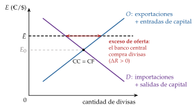
Fuente: elaboración propia.
iii) Implicaciones
Se deprecia la moneda del país con más inflación (\(\beta_1>0\): pierde competitividad), con más crecimiento (\(\beta_2>0\): importa más) y con menos tipo de interés (\(\beta_3<0\): salen capitales). Una política comercial que mejore la cuenta corriente la aprecia (\(\beta_4<0\)).
Con tipo fijo, \(\bar E\), distinto del de vaciado, el mercado no se vacía solo. Si la moneda está infravalorada (\(\bar E>E_0\)), hay un exceso de oferta de divisas que el banco central compra con reservas; si está sobrevalorada, las pierde.
El tipo que vaciaría el mercado si el banco central dejara de intervenir es el tipo de cambio sombra, \(\tilde E\). Cuando las reservas se agotan, el tipo fijo cae si \(\tilde E>\bar E\): es la base de los modelos de crisis cambiarias [ver tema 3.B.17].
c) Valoración
Trata los movimientos de capital como flujos permanentes, cuando son ajustes de stocks: un diferencial de tipos de interés provoca una recomposición de las carteras, una entrada de capital de una vez, no un flujo indefinido.
Los datos tampoco lo apoyan: no hay una relación fuerte y sistemática entre los movimientos del tipo de cambio y la cuenta corriente.
No invalida lo esencial: es la interacción de la oferta y la demanda lo que fija el tipo de cambio. Pero esas ofertas y demandas hay que explicarlas como demandas de activos, que es lo que hará el bloque II.
I.2. La paridad del poder adquisitivo: flujos de bienes
Una vez visto el enfoque de flujos, pasamos a la teoría más antigua del tipo de cambio: la que lo liga a los precios por el arbitraje de bienes. Primero la paridad en sí y después por qué falla, con el modelo de Balassa-Samuelson.
I.2.1. La PPA absoluta y relativa
a) Idea
La paridad del poder adquisitivo (PPA) dice que una misma cesta de bienes debe costar lo mismo en todos los países: el tipo de cambio nominal se ajusta para igualar el poder de compra de las monedas.
Origen: la idea aparece en la Escuela de Salamanca, en el siglo XVI. El nombre lo pone Cassel (1918), en el debate sobre las paridades a las que debían volver las monedas tras las inflaciones de la Primera Guerra Mundial.5
b) Modelo
i) Supuestos
Los bienes se comercian libremente: no hay barreras al comercio ni costes de transporte.
Los mercados son perfectamente competitivos: las empresas no tienen poder de mercado y no pueden discriminar precios entre países.
Los bienes son homogéneos y comerciables, y la cesta de consumo es la misma en todos los países.
ii) Desarrollo
Ley del precio único: con esos supuestos no hay oportunidades de arbitraje, y el precio de cada bien expresado en la misma moneda es igual en todas partes, \(P_k=E\,P^*_k\).
PPA absoluta: si se cumple para todos los bienes y las cestas son iguales, se cumple para los niveles de precios: \[\tag{3} P=E\,P^*\quad\Longleftrightarrow\quad E=\frac{P}{P^*}\quad\Longleftrightarrow\quad q\equiv\frac{E\,P^*}{P}=1 .\] Cuanto más alto es el nivel de precios de un país respecto al extranjero, más depreciada tiene que estar su moneda, y el tipo de cambio real es constante e igual a 1.
PPA relativa: los supuestos no se cumplen, pero si las barreras, los no comerciables o las diferencias de cesta son estables en el tiempo, se cumplen las tasas de variación. Tomando logaritmos en \(q=EP^*/P\) y derivando respecto al tiempo, \(\gamma_q\simeq\gamma_E+\pi^*-\pi\) [ver tema 3.B.11], y con \(\gamma_q=0\): \[\tag{4} \gamma_E=\pi-\pi^* .\] La moneda del país con más inflación se deprecia en la diferencia de inflaciones, y el tipo de cambio real es constante, aunque no tiene por qué ser 1.6
iii) Implicaciones
Los determinantes del tipo de cambio nominal son los niveles de precios (versión absoluta) o las inflaciones (versión relativa); el tipo de cambio real no cambia.
Si la PPA se cumple a largo plazo, las desviaciones del tipo real son transitorias: el tipo real revierte a la media.7 Es el ancla de largo plazo de los modelos monetarios (II.1).
c) Evidencia empírica
A corto plazo no se cumple: con tipos flexibles, el tipo nominal se mueve unas 3 veces más que los precios relativos, y el tipo real se mueve casi a la par que el nominal; con tipos flexibles, el tipo real es mucho más volátil que con tipos fijos.
A largo plazo se cumple la relativa, pero despacio: las desviaciones tardan de 3 a 5 años en reducirse a la mitad. Se cumple mejor con inflaciones muy altas, cuando dominan las perturbaciones monetarias, como en la hiperinflación alemana de los años 20. Con la PPA hay que dar tiempo al tiempo: se cumple, pero a su ritmo.
La paradoja de la PPA: una volatilidad tan alta del tipo real solo parece explicable con perturbaciones monetarias y precios rígidos, pero los precios se ajustan en 1 o 2 años, no en 3 a 5. ¿Cómo puede ser a la vez tan volátil y tan lento en volver?
Una explicación, la no linealidad: con costes de transporte y de entrar en el mercado, no compensa arbitrar las diferencias pequeñas, y el tipo real se mueve sin volver dentro de una banda. Fuera de ella, el arbitraje lo devuelve, y más deprisa cuanto mayor es la desviación (lo intuyó Eli Heckscher en 1916). Con perturbaciones del 1 al 5 %, la vida media es inferior a 3 años, y con las mayores, mucho menor.
Los contrastes (regresiones, raíz unitaria, cointegración entre \(e\), \(p\) y \(p^*\), paneles y series de 2 siglos) y las demás explicaciones de la persistencia están en el anexo A.
El índice Big Mac. The Economist lo publica desde 1986 como una forma desenfadada de aplicar la PPA absoluta a un solo bien, la hamburguesa Big Mac de McDonald’s, que se vende casi igual en más de 50 países.
La PPA Big Mac es el tipo de cambio que haría que la hamburguesa costase lo mismo en dólares en todas partes. Si al tipo de mercado sale más cara que en Estados Unidos, la moneda está sobrevalorada respecto a esa PPA; si sale más barata, infravalorada.
En julio de 2026, un Big Mac costaba 6,22 dólares en Estados Unidos y 6,19 euros en la zona del euro, de modo que la PPA Big Mac estaba casi en la paridad (0,995 euros por dólar). Al tipo de mercado, 0,874 euros por dólar, costaba 7,08 dólares: el euro estaba sobrevalorado un 13,8 % (gráfico 2).
El franco suizo estaba sobrevalorado un 45 %; el yen, infravalorado un 50 %, el renminbi un 37 % y la rupia indonesia un 62 %.
Las monedas de los países pobres salen casi siempre «baratas»: la hamburguesa lleva mucho trabajo local no comerciable, que allí cuesta menos. Es el efecto Balassa-Samuelson (I.2.2), y por eso The Economist publica también un índice ajustado por el PIB por habitante: con él, el renminbi pasa de estar infravalorado un 37 % a un 24 %, y el euro, de sobrevalorado un 14 % a un 29 %.
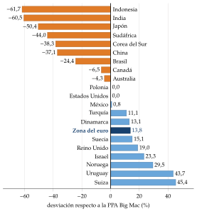
Fuente: The Economist, índice Big Mac de julio de 2026, sin ajustar (The Economist, 2026b). Elaboración propia.
Datos y método: economist.com/interactive/big-mac-index.
d) Valoración
Las desviaciones a corto plazo llevaron a muchos economistas a abandonarla como teoría del tipo de cambio: muy pocos defienden hoy que se cumpla de forma continua.
Pero la PPA relativa sirve como ancla de largo plazo del tipo de cambio real, y sus estimaciones se usan como uno de los indicadores del ajuste del tipo nominal. La retoma el enfoque monetario (II.1).
Es más una condición de equilibrio que una teoría completa: dice cómo se relacionan el tipo de cambio y los precios, pero no qué mueve a cada uno. Y sus supuestos no se cumplen, que es lo que estudia el modelo siguiente.
I.2.2. Las desviaciones de la PPA: el efecto Balassa-Samuelson
a) Idea
La PPA falla porque fallan sus supuestos:
hay barreras y costes de transporte, como señaló ya Cassel, y crean una banda dentro de la cual no compensa arbitrar;
hay competencia imperfecta: las empresas con poder de mercado discriminan precios entre países y los mantienen en la moneda del comprador aunque cambie el tipo de cambio, la fijación de precios según el mercado (pricing to market) de Paul Krugman y Rudiger Dornbusch.8 Además, gran parte del comercio se factura en dólares. Por eso el traspaso del tipo de cambio a los precios es incompleto [ver tema 3.A.32] [ver tema 3.A.37];
no todos los bienes se comercian: los servicios no comerciables no tienen un precio que iguale el arbitraje.
El último caso lo formaliza el modelo de Balassa-Samuelson. ¿Por qué un corte de pelo es más caro en Madrid que en Bogotá, y por qué los países ricos tienen niveles de precios más altos? Harrod (1933), Balassa (1964) y Samuelson (1964) lo explican por la productividad: los países ricos lo son, sobre todo, porque son más productivos en los bienes que se comercian.
b) Modelo
i) Supuestos
Hay 2 sectores en cada país: comerciables (\(T\)) y no comerciables (\(N\)).
Los comerciables cumplen la ley del precio único, \(P_T=E\,P^*_T\).
Hay un solo factor, el trabajo, móvil entre sectores pero no entre países, con productividades \(A_T\) y \(A_N\): \(Y_j=A_jL_j\), con \(j=T,N\).
Hay competencia perfecta: el precio es igual al coste marginal en cada sector.
El nivel de precios pondera los no comerciables con el mismo peso, \(\omega_N\), en los 2 países.
ii) Desarrollo
Como el trabajo es móvil, el salario nominal es el mismo en los 2 sectores e igual al valor del producto marginal, \(W=P_TA_T=P_NA_N\). El precio relativo de los no comerciables lo fija la productividad relativa: \[\tag{5} \frac{P_N}{P_T}=\frac{A_T}{A_N}\quad\Longleftrightarrow\quad p_N-p_T=a_T-a_N ,\] con las minúsculas en logaritmos (\(a\equiv\ln A\)).
El nivel de precios pondera los 2 sectores, \(p=(1-\omega_N)\,p_T+\omega_N\,p_N=p_T+\omega_N\,(p_N-p_T)\), y lo mismo fuera.
Sustituyendo en el tipo real, \(q\equiv e+p^*-p\), con la ley del precio único en los comerciables (\(e+p^*_T-p_T=0\)) y (5) en los 2 países:
\[q=-\,\omega_N\big[(a_T-a_N)-(a^{*}_T-a^{*}_N)\big]\tag{6}\]
iii) Implicaciones
El país cuya productividad en los comerciables crece más que en los no comerciables, y más que en el extranjero, ve apreciarse su tipo real (\(\downarrow q\)), sin que cambie el tipo nominal de los comerciables (gráfico 3):
sube la productividad en los comerciables y, con su precio fijado por la ley del precio único, sube el salario en ese sector;
como el trabajo es móvil, sube el salario en toda la economía;
los no comerciables, sin más productividad, suben su precio para cubrir el mayor coste;
sube el nivel de precios y se aprecia el tipo de cambio real.
Los países ricos tienen niveles de precios más altos (el llamado efecto Penn): por eso las monedas de los países pobres salen «baratas» en el índice Big Mac.
Con el tipo nominal fijo, o dentro de una unión monetaria, la apreciación real llega por una inflación más alta: los países que convergen tienen más inflación sin perder competitividad en los comerciables [ver tema 3.B.11] [ver tema 3.B.16].
Es una teoría del precio relativo de los no comerciables, y de él depende el tipo real: no explica los niveles absolutos de precios.
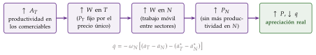
c) Extensiones
Con capital: si hay capital además de trabajo y el capital se mueve entre países, el tipo de interés mundial fija su coste y el resultado es el mismo, con los coeficientes de las participaciones del trabajo en cada sector.
Con demanda: el modelo determina el precio relativo solo por la oferta. Si el trabajo no es perfectamente móvil, el gasto público, que se dirige sobre todo a los no comerciables, y el desplazamiento de la demanda hacia los servicios cuando sube la renta también los encarecen.
d) Evidencia empírica
En el corte transversal funciona: los niveles de precios suben con la renta por habitante. La apreciación real del yen frente al dólar en los años 70 y 80, mientras Japón alcanzaba a Estados Unidos, fue el ejemplo clásico; más recientemente, se ha discutido si se aplica a China.
En las series temporales el apoyo es más débil y depende de la muestra. Si se tiene en cuenta que la productividad mueve el tipo real de equilibrio, la vuelta a ese equilibrio es más rápida de lo que se pensaba; pero a corto plazo la variación del tipo real la explican sobre todo los comerciables, no los servicios.
e) Valoración
Da una razón por la que una parte de las desviaciones de la PPA no se corrige: no son desequilibrios, sino un equilibrio que se mueve. En un país que converge, la apreciación real no es una pérdida de competitividad preocupante: es el efecto colateral de crecer [ver tema 4.A.22].
Sus límites: supone que la ley del precio único se cumple en los comerciables, y no se cumple a corto plazo (diferenciación del producto, fijación de precios según el mercado), y deja fuera la demanda.
Con los precios dados, la productividad también aprecia la moneda a largo plazo por otro camino, el de la demanda de los bienes nacionales, que se abaratan; el anexo D reúne estos factores reales y los reconcilia con Balassa-Samuelson.
I.3. Las paridades de intereses (PCI y PNCI): flujos de capitales
a) Idea
Una vez vista la paridad de los bienes, pasamos a la de los activos. Si los capitales se mueven libremente, el tipo de cambio tiene que igualar la rentabilidad de invertir en activos nacionales y extranjeros: sin oportunidades de arbitraje (paridad cubierta) ni de especulación con beneficio esperado (paridad no cubierta).
La popularizó John Maynard Keynes en su Breve tratado sobre la reforma monetaria. Su derivación completa y su evidencia son materia de los mercados de divisas [ver tema 3.B.13]; aquí interesa como teoría del tipo de cambio.
b) Modelo
i) Supuestos
Movilidad perfecta de capitales: la cartera se ajusta al instante a la deseada, sin costes de transacción ni controles. Basta, sin riesgo de impago, para la paridad cubierta.
Sustituibilidad perfecta entre activos nacionales y extranjeros: a igual rentabilidad esperada, al inversor le da igual tener unos u otros (neutralidad al riesgo). Es más exigente y hace falta para la paridad no cubierta.
ii) Desarrollo
Un euro invertido en casa rinde \(1+i\). Cambiado a divisa, invertido fuera y vuelto a cambiar, rinde \((1+i^*)\) por el tipo al que se deshace la operación dividido por el de hoy.
Paridad cubierta de intereses (PCI): si se cubre el riesgo con un contrato a plazo, el tipo al que se deshace es el tipo a plazo de hoy, y el arbitraje sin riesgo impone:9 \[\tag{7} 1+i=(1+i^{*})\,\frac{F_t^{t+1}}{E_t}\quad\Longrightarrow\quad i-i^{*}\approx\underbrace{\frac{F_t^{t+1}-E_t}{E_t}}_{\text{margen a plazo}} .\]
Paridad no cubierta de intereses (PNCI): si no se cubre, el tipo al que se deshace es el de contado futuro, desconocido, y con neutralidad al riesgo cuenta el esperado: \[\tag{8} 1+i=(1+i^{*})\,\frac{E^e_{t+1}}{E_t}\quad\Longrightarrow\quad i-i^{*}\approx\underbrace{\frac{E^e_{t+1}-E_t}{E_t}}_{\text{depreciación esperada}}\equiv\gamma E^e .\] Las aproximaciones salen de tomar logaritmos, que convierte el producto en una suma, \(\ln(1+i)=\ln(1+i^*)+\ln E^e_{t+1}-\ln E_t\), y de \(\ln(1+x)\approx x\) para \(x\) pequeño.
iii) Implicaciones
Como teoría del tipo de cambio: despejando \(E_t\) de (8), el tipo de contado de hoy depende del diferencial de intereses y del tipo esperado. Si sube \(i\) con \(i^*\) y \(E^e_{t+1}\) dados, entran capitales y la moneda se aprecia hoy (\(\downarrow E_t\)) hasta que la depreciación esperada compense el diferencial. Es el canal del tipo de cambio de la política monetaria [ver tema 3.A.37].
El cuadro de las paridades (figura 1): la PCI, la PNCI, el efecto Fisher internacional (\(i-i^*=\pi^e-\pi^{*e}\)) y la PPA relativa esperada (\(\gamma E^e=\pi^e-\pi^{*e}\)) unen 4 diferenciales.
Si se cumplen todas, el tipo a plazo es un predictor insesgado del contado futuro (\(F_t^{t+1}=E^e_{t+1}\)) y los tipos de interés reales se igualan entre países (\(r=r^*\)).
Algunos autores convierten las paridades en un modelo del tipo de cambio: si el tipo a plazo predice sin sesgo, basta conocer el tipo esperado y los tipos de interés para tener el de contado.
Con expectativas estáticas (\(\gamma E^e=0\)), la PNCI se reduce a \(i=i^*\), la balanza de pagos horizontal del modelo de Mundell-Fleming (I.4).10
Si los activos no son sustitutos perfectos, aparece una prima de riesgo, \(i-i^*\approx\gamma E^e+\rho\), que es la base del enfoque de cartera (II.2).
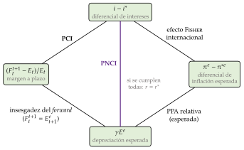
Fuente: elaboración propia a partir de Gandolfo (2002, cap. 4) y Sarno y Taylor (2002, cap. 2).
c) Evidencia empírica
La PCI se cumplía casi exactamente hasta 2008. Desde entonces hay desviaciones persistentes, la base de los swaps de divisas, porque arbitrar consume balance de los bancos, que la regulación encarece.
La PNCI falla a corto plazo: la moneda con el tipo de interés más alto, que debería depreciarse, tiende a apreciarse. Es la paradoja del margen forward (III.1.2).
d) Valoración
Las 2 paridades son relaciones de equilibrio entre el tipo de contado, el tipo a plazo, el esperado y los tipos de interés, no teorías completas: para cerrar el modelo hace falta decir qué determina las expectativas y los tipos de interés.
Pero la PNCI es la pieza que convierte las expectativas en tipo de cambio de hoy en todos los modelos de activos del bloque II.
I.4. El modelo IS-LM-BP (Mundell-Fleming)
a) Idea
b) Modelo
i) Supuestos
Precios fijos, recursos ociosos y expectativas estáticas sobre el tipo de cambio.
La cuenta financiera neta depende del diferencial de tipos, \(\beta_K(i-i^{*})\) (lleva subíndice para distinguirla de los coeficientes \(\beta\) de la regresión (2)).
ii) Desarrollo
Con tipo flexible, el tipo de cambio es el que equilibra la balanza de pagos dada la renta: es una teoría de flujos [ver tema 3.A.32].
Con movilidad perfecta (\(\beta_K\to\infty\)) y expectativas estáticas, la PNCI se reduce a \(i=i^{*}\) (la BP horizontal).
iii) Implicaciones
Una expansión monetaria deprecia la moneda, y una fiscal la aprecia sin mover la renta.
Más que una teoría del tipo de cambio, es una teoría de la política económica en economía abierta.
c) Valoración
Su límite como teoría del tipo de cambio es el de los flujos: no tiene stocks ni expectativas. Dornbusch (1976b) le añade expectativas racionales y precios rígidos, y de ahí sale la sobrerreacción (II.1.2).
Recapitulación del bloque I: la oferta y la demanda de divisas fijan el tipo de cambio, pero explicarlas como flujos no basta; la PPA lo ancla a los precios solo a largo plazo, y Balassa-Samuelson explica por qué ni siquiera entonces del todo; las paridades de intereses lo ligan cada día a los tipos de interés y a las expectativas.
Nexo: con estas piezas pasamos a los modelos que tratan el tipo de cambio como el precio de un activo.
II. Enfoque moderno: modelos de activos (stocks)
Conclusión anticipada: tratar el tipo de cambio como el precio relativo de 2 activos explica a la vez su ancla de largo plazo (el dinero y los precios) y su volatilidad (las expectativas y la rigidez de los precios). Pero, a corto plazo, ningún modelo lo predice mejor que un paseo aleatorio.
Nexo: una vez vistos los flujos y las paridades, pasamos a los modelos que tratan el tipo de cambio como el precio de un activo. Se mueve para que los agentes quieran mantener los saldos que existen de dinero y de bonos de cada país. Tras la ruptura de Bretton Woods, con capitales muy móviles, es el enfoque dominante.
Todos los modelos de activos suponen movilidad perfecta de capitales; se distinguen por la sustituibilidad entre bonos nacionales y extranjeros:
el enfoque monetario supone sustituibilidad perfecta (se cumple la PNCI): los bonos de los 2 países son un solo activo y basta con mirar el mercado de dinero;
el enfoque de cartera supone sustituibilidad imperfecta: cuentan también las ofertas de bonos, y aparece una prima de riesgo.
El enfoque monetario nace para la balanza de pagos con tipo fijo: un exceso de oferta de dinero se va por la balanza de pagos y el banco central pierde reservas [ver tema 3.B.12]. Con tipo flexible, el banco central no interviene, las reservas no cambian y lo que se ajusta es el tipo de cambio: es el enfoque monetario del tipo de cambio.
Cada modelo levanta un supuesto del anterior (tabla 1).
| Supuesto | Monetario flexible | Dornbusch | Cartera (Branson) |
|---|---|---|---|
| Movilidad perfecta de capitales | sí | sí | sí |
| Sustituibilidad perfecta (PNCI) | sí | sí | no: prima de riesgo |
| Precios flexibles (PPA continua) | sí | no: solo a largo plazo | dados a corto plazo |
| Demanda de dinero | \(m-p=k\,y-h\,i\) | \(m-p=k\,y-h\,i\) | parte de la riqueza |
| Expectativas | racionales | regresivas (racionales con el \(\theta\) adecuado) | estáticas a corto plazo |
Fuente: elaboración propia a partir de Gandolfo (2002) y Sarno y Taylor (2002). En salmón, el supuesto que levanta cada modelo.
II.1. Enfoque monetario: el stock de dinero
El tipo de cambio es el precio relativo de 2 monedas, así que lo determinan la oferta y la demanda relativas de dinero.
Los 2 modelos monetarios se distinguen por la flexibilidad de los precios: con precios flexibles, el modelo es de largo plazo; con precios rígidos, explica también el corto plazo.
II.1.1. Precios flexibles: Frenkel, Mussa y Bilson
a) Idea
El modelo monetario con precios flexibles es de Frenkel (1976), Mussa (1976) y Bilson (1978). Une la PPA, que liga el tipo de cambio a los precios, con la teoría cuantitativa, que liga los precios al dinero: el precio se determina en el mercado de dinero y, a través de la PPA, determina el tipo de cambio.13
b) Modelo
i) Supuestos
Se cumple la PPA absoluta de forma continua: en logaritmos, \(e=p-p^*\).
Se cumple la PNCI: movilidad y sustituibilidad perfectas.14
La demanda de saldos reales de cada país, \((M/P)^D=Y^k\mathrm{e}^{-h\,i}\), crece con la renta y baja con el tipo de interés, con la misma forma en los 2 países. En logaritmos (salvo \(i\)): \[\tag{9} m-p=k\,y-h\,i,\qquad m^*-p^*=k\,y^*-h\,i^* ,\] donde \(k\) es la elasticidad-renta y \(h\) la semielasticidad respecto al tipo de interés: son la \(k\) y la \(h\) de la demanda de dinero \(M/P=kY-hi\), aquí en logaritmos [ver tema 3.A.35].
La oferta de dinero y la renta, de pleno empleo, son exógenas.
ii) Desarrollo
Despejando los precios de (9), \(p=m-k\,y+h\,i\), restando los del extranjero y usando la PPA:
\[e=(m-m^*)-k\,(y-y^*)+h\,(i-i^*)\tag{10}\]
Con la PNCI y la PPA relativa, el diferencial de intereses es el de inflación esperada, \(i-i^*=\pi^e-\pi^{*e}\): se igualan los tipos de interés reales, \(r=r^*\) (paridad de intereses reales). La ecuación se puede escribir con \(h\,(\pi^e-\pi^{*e})\) en el último término.
El tipo de cambio como precio de un activo: con expectativas racionales [ver tema 3.A.6] y la PNCI en logaritmos, \(i-i^*=\mathbb{E}_t[e_{t+1}]-e_t\), y (10) se resuelve hacia delante: \[\tag{11} e_t=\frac{1}{1+h}\sum_{j=0}^{\infty}\Big(\frac{h}{1+h}\Big)^{j}\,\mathbb{E}_t\big[(m-m^*)_{t+j}-k\,(y-y^*)_{t+j}\big] .\] El tipo de cambio de hoy es el valor descontado de los fundamentos esperados: cambia con las noticias sobre el futuro aunque los fundamentos de hoy no cambien.
iii) Implicaciones
Más dinero relativo deprecia en la misma proporción (\(\partial e/\partial m=1\)): el dinero es neutral y la PPA traslada la subida de precios al tipo de cambio.15
Más renta relativa aprecia: sube la demanda de dinero y, con la oferta dada, bajan los precios.
Más tipo de interés relativo deprecia: refleja más inflación esperada (efecto Fisher), baja la demanda de dinero, suben los precios y, por la PPA, el tipo de cambio. Es lo contrario de lo que dicen los modelos keynesianos y la intuición de la PNCI; Frankel (1979) los reconcilia (II.1.2).
El gráfico 4 lo muestra con una subida permanente de la tasa de crecimiento del dinero: el tipo de interés sube en lo que sube la inflación esperada, la demanda de dinero cae, y los precios y el tipo de cambio dan un salto al alza y crecen después más deprisa.
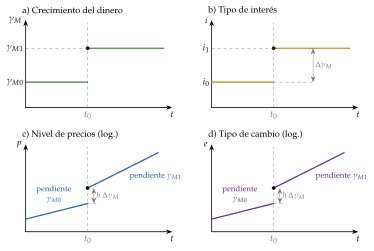
Fuente: elaboración propia a partir de Krugman, Obstfeld y Melitz (2022, cap. 16).
c) Evidencia empírica
Funciona con inflaciones muy altas, cuando dominan las perturbaciones monetarias, como en la hiperinflación alemana de los años 20. Entre las grandes monedas, con muy poca diferencia de crecimiento del dinero, apenas se ve relación, y la predicción de que un tipo de interés más alto deprecia va contra la evidencia salvo con inflaciones excepcionales.
Se ajustó bien a los primeros años de la flotación y dejó de hacerlo a finales de los 70; fuera de la muestra no supera a un paseo aleatorio. A horizontes de varios años, los fundamentos monetarios recuperan algo de capacidad de predicción.
d) Valoración
Es simple y da el ancla de largo plazo, los fundamentos monetarios y la PPA, pero sus supuestos son muy exigentes: PPA continua, precios y salarios flexibles, sustituibilidad y movilidad perfectas.
Con precios flexibles, el tipo real no se mueve, y en los datos se mueve casi tanto como el nominal: hacen falta precios rígidos.
II.1.2. Precios rígidos: la sobrerreacción de Dornbusch (1976)
a) Idea
El modelo monetario no explica por qué el tipo de cambio es mucho más volátil que los precios y que sus fundamentos, ni por qué el tipo real se mueve casi como el nominal. Dornbusch (1976b) le añade un supuesto realista: los precios de los bienes se ajustan despacio, y los de los activos, al instante.
Con expectativas racionales, eso basta para que el tipo de cambio sobrerreaccione (overshooting): ante una expansión monetaria se deprecia a corto plazo más de lo que lo hará a largo plazo, sin especuladores irracionales ni burbujas.
Los mercados financieros se adelantan a los de bienes y se pasan de largo.
b) Modelo
i) Supuestos
País pequeño: \(i^*\) está dado, y los precios extranjeros se normalizan a 1 (\(p^*=0\)). La renta está en su nivel de pleno empleo, \(\bar y\).
Movilidad y sustituibilidad perfectas: se cumple la PNCI.
Precios rígidos a corto plazo: el nivel de precios se ajusta poco a poco al exceso de demanda de bienes; a largo plazo se cumple la PPA.
La demanda de dinero es la de (9).
Expectativas regresivas: se espera que el tipo de cambio vuelva a su valor de largo plazo, \(\bar e\), a una velocidad \(\theta\). Con el \(\theta\) adecuado, esas expectativas son racionales: aciertan (anexo B).
ii) Desarrollo
El modelo tiene 4 piezas, en logaritmos (salvo los tipos de interés): \[i=i^{*}+\dot e^{\,e}\qquad\text{PNCI en tiempo continuo,}\tag{12}\] \[\dot e^{\,e}=\theta\,(\bar e-e),\quad \theta>0\qquad\text{expectativas regresivas,}\tag{13}\] \[m-p=k\,\bar y-h\,i\qquad\text{mercado de dinero,}\tag{14}\] \[\dot p=\psi\,(d-\bar y),\quad d=\bar a+\nu\,(e-p)-b\,i\qquad\text{ajuste lento de los precios,}\tag{15}\] donde \(\dot e^{\,e}\) es la depreciación esperada (la \(\gamma E^e\) de la PNCI (8), en logaritmos y en tiempo continuo); \(\theta\), la velocidad a la que se espera que el tipo vuelva a su largo plazo (la letra de Dornbusch: aquí no es la aversión al riesgo); \(\psi\), la velocidad de ajuste de los precios; \(d\), la demanda de bienes, con \(\bar a\) su parte autónoma, \(\nu\) la sensibilidad al tipo de cambio real, \(e-p\) (la misma \(\nu\) del saldo comercial \(XN=x\,Y^{*}-m\,Y+\nu\,q\) [ver tema 3.A.32]), y \(b\) la sensibilidad al tipo de interés (la de la IS).
Largo plazo: con \(\dot p=0\) e \(i=i^*\), \(\bar p=m-k\,\bar y+h\,i^*\) y \(\bar e=\bar p+(\bar y+b\,i^*-\bar a)/\nu\). Un aumento permanente de \(m\) sube \(\bar p\) y \(\bar e\) en la misma proporción: el dinero es neutral, como en el modelo con precios flexibles.
Equilibrio de los mercados de activos: restando el equilibrio monetario de largo plazo del de corto, \(i-i^*=(p-\bar p)/h\), y con (12) y (13): \[\tag{16} e=\bar e-\frac{1}{h\,\theta}\,(p-\bar p) .\] Si el nivel de precios está por debajo del de largo plazo, el tipo de interés está por debajo de \(i^*\), y la moneda tiene que estar más depreciada que a largo plazo, para que se espere una apreciación que compense el menor interés.
Una expansión monetaria permanente y no anticipada (\(dm>0\)): \(\bar e\) y \(\bar p\) suben en \(dm\), pero en el impacto \(p\) no se mueve. De (16):
\[\frac{de}{dm}=1+\frac{1}{h\,\theta}>1\tag{17}\]
Gráficamente (gráfico 5: en el panel superior, la PNCI en el plano \((i,E)\); en el inferior, el mercado de dinero, con los saldos reales hacia abajo):
con los precios fijos, la oferta real de dinero sube y el tipo de interés baja de \(i_0\) a \(i_1\) (efecto liquidez);
los agentes saben que a largo plazo el tipo de cambio será más alto, y la curva de la PNCI se desplaza hacia arriba: a cada tipo de interés le corresponde una moneda más depreciada;
al nuevo tipo de interés, más bajo, le corresponde un tipo de cambio \(E_1\) aún más alto que el de largo plazo, \(E_2\): la moneda sobrerreacciona (del punto \(A\) al \(B\));
a medida que suben los precios, los saldos reales vuelven a su nivel inicial, el tipo de interés vuelve a \(i_0\) y la moneda se aprecia hasta \(E_2\) (punto \(C\)).
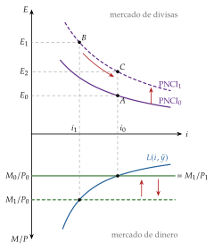
Fuente: elaboración propia a partir de Krugman, Obstfeld y Melitz (2022, cap. 15).
Dinámica (gráfico 6): la depreciación real y el menor tipo de interés crean un exceso de demanda de bienes; los precios suben poco a poco, la oferta real de dinero baja, el tipo de interés vuelve a \(i^*\) y la moneda se aprecia hasta \(\bar e\). Con precios flexibles, en cambio, el tipo de cambio saltaría de una vez a su nuevo nivel de largo plazo (en discontinua). La derivación completa, con el diagrama de fases, está en el anexo B.
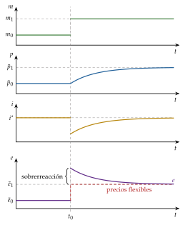
iii) Implicaciones
El tipo de cambio puede ser muy volátil a corto plazo y moverse a la vez de forma coherente con sus fundamentos: un salto brusco no prueba que haya especulación desestabilizadora.
La sobrerreacción es mayor cuanto menor es \(h\) (el tipo de interés cae más, en \(dm/h\)) y cuanto menor es \(\theta\) (las expectativas tardan más en volver), y desaparece si los precios son flexibles. Con expectativas racionales, \(\theta\) depende de lo rápido que se ajustan los precios: cuanto más lentos, más sobrerreacción.
La política monetaria mueve el tipo de cambio real a corto plazo, porque el nominal salta y los precios no: con precios rígidos a corto plazo y flexibles a largo plazo, cambia la competitividad a corto plazo y es neutral a largo plazo.
Si la expansión se anuncia antes de aplicarse, el tipo de cambio salta al anunciarse (menos que si no se anticipa), se sigue depreciando hasta que se aplica y después se aprecia hasta su nuevo nivel.16
c) Extensiones
El diferencial de intereses reales: Frankel (1979) junta el modelo monetario y el de Dornbusch. Con inflación esperada, \[\tag{18} e=(m-m^*)-k\,(y-y^*)-\frac{1}{\theta}\big[(i-\pi^e)-(i^*-\pi^{*e})\big]+h\,(\pi^e-\pi^{*e}) .\] Una subida del tipo nominal que no refleja más inflación esperada (una política monetaria restrictiva con precios rígidos) aprecia; una que la refleja deprecia. Así se resuelve la aparente contradicción entre el modelo monetario y la PNCI.
Producción variable: si la renta responde a corto plazo, parte del ajuste lo hace la producción, y la sobrerreacción puede no darse.
PPA solo para los comerciables: si la PPA vale solo para ellos, los factores reales, de oferta (dotaciones, productividad) o de demanda (preferencias, gasto público), mueven también el tipo de cambio nominal de largo plazo (I.2.2).
Microfundamentos: en los modelos de la nueva macroeconomía abierta con precios rígidos no hay sobrerreacción si los exportadores fijan los precios en su moneda; sí la hay si los fijan en la del comprador (III.2.1).
d) Evidencia empírica
Apoya su mecanismo: al pasar de tipos fijos a flexibles, el tipo de cambio real se vuelve mucho más volátil sin que cambien los fundamentos reales, señal de que los precios son rígidos.
Pero la sobrerreacción no es inmediata: tras una política monetaria restrictiva de Estados Unidos, el dólar se sigue apreciando durante 2 o 3 años antes de volver, la sobrerreacción retardada (delayed overshooting); con otras formas de identificar la política monetaria, el momento del máximo es muy incierto.
e) Valoración
Explica a la vez la volatilidad del tipo nominal y que el real se mueva casi como el nominal, y a largo plazo vuelve al modelo monetario. Para Rogoff (2002), está entre los artículos más influyentes de la economía internacional desde la Segunda Guerra Mundial.
Sus límites: la sobrerreacción de los datos es retardada; las expectativas regresivas son una forma reducida, y fuera de la muestra predice tan mal como los demás (II.3.2).
La volatilidad que explica es uno de los costes de la flotación que se pesan al elegir el régimen cambiario [ver tema 3.B.15].
II.2. Enfoque de cartera (Branson): dinero y otros activos financieros
a) Idea
El enfoque monetario mira solo el dinero porque supone que los bonos nacionales y extranjeros son sustitutos perfectos. Si no lo son, por el riesgo cambiario, el riesgo país o el sesgo hacia lo nacional, los inversores diversifican, y el tipo de cambio se mueve también con las ofertas de bonos y con la riqueza.
El modelo lleva a la economía abierta la teoría de la cartera de Tobin (1958)17 y su enfoque de equilibrio general de los activos [ver tema 3.A.35]. Su precedente en la balanza de pagos es McKinnon y Oates (1966); lo formulan Branson (1977) y Branson, Halttunen y Masson (1977), y la síntesis de referencia es Branson y Henderson (1985).
b) Modelo
i) Supuestos
País pequeño, con 3 activos en manos de los residentes: dinero, \(M\); bonos nacionales, \(B\), que rinden \(i\); y bonos extranjeros, \(B^*\), en divisa, que rinden \(i^*+\gamma E^e\) en moneda nacional.
Sustituibilidad imperfecta: no se cumple la PNCI; la diferencia de rendimientos es una prima de riesgo.
La demanda de cada activo es una parte de la riqueza (no de la renta), que depende de los rendimientos.
A corto plazo, los precios, la renta y los saldos de activos están dados, y las expectativas son estáticas (\(\gamma E^e=0\)). A medio plazo, \(B^*\) cambia con la cuenta corriente.
ii) Desarrollo
La riqueza financiera (\(W\), local de este modelo) y el equilibrio de los 3 mercados son: \[W=M+B+E\,B^{*},\tag{19}\] \[M=w_{\mathrm M}\big(\underset{-}{i},\,\underset{-}{i^{*}+\gamma E^e}\big)\,W,\qquad B=w_{\mathrm B}\big(\underset{+}{i},\,\underset{-}{i^{*}+\gamma E^e}\big)\,W,\] \[E\,B^{*}=w_{\mathrm B^*}\big(\underset{-}{i},\,\underset{+}{i^{*}+\gamma E^e}\big)\,W,\tag{20}\] con \(w_{\mathrm M}+w_{\mathrm B}+w_{\mathrm B^*}=1\) las partes de la riqueza en cada activo (las de la cartera de Tobin: aquí \(w\) no es el salario). Por la ley de Walras, si 2 mercados están en equilibrio, también el tercero.
La sustituibilidad imperfecta se resume en una prima de riesgo, \(i=i^*+\gamma E^e+\rho\), con \(\rho\) creciente en la oferta relativa de activos nacionales: para que los inversores tengan más bonos nacionales, hay que pagarles más.
Gráficamente, en el plano \((i,E)\), con \(i\) en abscisas, el mismo que el de Dornbusch (gráfico 7). Una depreciación (\(\uparrow E\)) sube el valor en moneda nacional de \(B^*\) y, con él, la riqueza; por eso:
\(MM\) (dinero) tiene pendiente positiva: la mayor riqueza aumenta la demanda de dinero, y \(i\) tiene que subir para reducirla;
\(BB\) (bonos nacionales) tiene pendiente negativa: aumenta la demanda de bonos, y \(i\) tiene que bajar;
\(B^*B^*\) (bonos extranjeros) tiene pendiente negativa y es menos inclinada que \(BB\): si sube \(i\), se demandan menos bonos extranjeros, y hace falta una apreciación que reduzca su valor. La demanda de bonos nacionales responde más a \(i\) que la de extranjeros.
Las pendientes, con su derivación, están en el anexo C.
A medio plazo, la cuenta corriente en moneda nacional es el saldo comercial, que depende del tipo real, más las rentas de los bonos extranjeros. Con tipo flexible y sin intervención, el superávit corriente es la acumulación de bonos extranjeros: \[\tag{21} E\,\dot B^{*}=\mathrm{CC}=XN(q)+i^{*}E\,B^{*} .\]
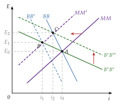
iii) Implicaciones
El tipo de cambio se mueve no solo con las perturbaciones del mercado de dinero, sino también con las de los mercados de bonos, porque los agentes recomponen su cartera hasta la diversificación deseada. La tabla 2 resume las perturbaciones habituales.
La regla para mover las curvas: a cada \(E\), ¿qué \(i\) vacía el mercado? (\(MM\) y \(BB\) se desplazan a izquierda o derecha); a cada \(i\), ¿qué \(E\)? (\(B^*B^*\), arriba o abajo).
Expansión monetaria por compra de bonos nacionales: \(MM\) y \(BB\) se desplazan a la izquierda; baja \(i\) y se deprecia la moneda (punto \(B\) del gráfico).
Expansión monetaria por compra de bonos extranjeros: \(MM\) a la izquierda y \(B^*B^*\) hacia arriba; el efecto sobre el tipo de cambio es mayor (punto \(C\)), porque \(B^*B^*\) es menos inclinada que \(BB\).
La intervención esterilizada funciona: si el banco central compra divisas y vende bonos nacionales sin cambiar la cantidad de dinero, cambia la composición de las carteras y la moneda se deprecia. En el modelo monetario no tendría efecto [ver tema 3.B.15].
Dinámica: la depreciación mejora la cuenta corriente (si se cumple Marshall-Lerner [ver tema 3.B.12]), se acumulan bonos extranjeros y la moneda se aprecia poco a poco. El tipo de cambio sobrerreacciona, como en Dornbusch, pero no por la rigidez de los precios, sino por la interacción entre el tipo de cambio, la cuenta corriente y la riqueza.
Largo plazo: se alcanza cuando la cuenta corriente es nula y \(B^*\) deja de cambiar: \(XN(q)=-i^*E\,B^*\). Un país acreedor (\(B^*>0\)) puede tener un déficit comercial permanente, pagado con las rentas de sus activos.
| Perturbación | \(MM\) | \(BB\) | \(B^*B^*\) | \(i\) | \(E\) |
|---|---|---|---|---|---|
| Más dinero, \(\uparrow M\) (sube la riqueza) | izq. | izq. | arriba | \(\downarrow\) | \(\uparrow\) |
| Compra de bonos nacionales, \(dM=-dB\) | izq. | izq. | — | \(\downarrow\) | \(\uparrow\) |
| Compra de bonos extranjeros, \(dM=-E\,dB^*\) | izq. | — | arriba | \(\downarrow\) | \(\uparrow\uparrow\) |
| Intervención esterilizada, \(dB=-E\,dB^*\) | — | dcha. | arriba | \(\uparrow\) | \(\uparrow\) |
| Déficit público financiado con deuda, \(\uparrow B\) | dcha. | dcha. | arriba | \(\uparrow\) | ? |
| Superávit corriente, \(\uparrow B^*\) | dcha. | izq. | abajo | ? | \(\downarrow\) |
Fuente: elaboración propia a partir de Branson y Henderson (1985) y Gandolfo (2002). En rojo, depreciación; en verde, apreciación. ?: depende de si los bonos nacionales sustituyen más al dinero o a los bonos extranjeros.
En el cante basta con 2 curvas, \(MM\) y \(B^*B^*\): por la ley de Walras, la tercera no añade nada. Para moverlas sin liarse: \(MM\) y \(BB\) se mueven a izquierda o derecha (a cada tipo de cambio, ¿qué tipo de interés vacía el mercado?); \(B^*B^*\), arriba o abajo (a cada tipo de interés, ¿qué tipo de cambio?). La tabla de efectos se cuenta de palabra. En el déficit público financiado con deuda, el efecto sobre el tipo de cambio es ambiguo: la mayor riqueza aumenta la demanda de bonos extranjeros, pero el mayor tipo de interés la desvía hacia los nacionales.
c) Extensiones
Expectativas racionales: el modelo las admite y mantiene casi todos sus resultados, pero obliga a distinguir las perturbaciones anticipadas, que ya están en el tipo de cambio de hoy, de las no anticipadas.
Microfundamentos: los modelos de intermediarios financieros con capacidad limitada para asumir riesgo dan una base a la prima de riesgo y al canal de cartera: los flujos de cartera mueven el tipo de cambio porque alguien tiene que absorberlos (III.2.3).
d) Evidencia empírica
Los primeros contrastes encontraron algo de apoyo a que la cuenta corriente mueve el tipo de cambio, pero la prima de riesgo que predicen las ofertas de bonos no aparece en los datos, y fuera de la muestra el modelo no supera al paseo aleatorio.
Sí hay evidencia del canal de cartera en la intervención esterilizada, y la intervención ha servido para frenar la apreciación de las monedas emergentes ante entradas de capital.
e) Valoración
Aportaciones: da efectos parecidos a los del enfoque monetario, incluida la sobrerreacción, y un análisis más rico de las perturbaciones y de los canales: la prima de riesgo, la riqueza y la cuenta corriente como determinantes del tipo de cambio, y por qué puede funcionar la intervención esterilizada.
Límites: es más complejo; las demandas de activos no se derivan de la optimización; las expectativas son estáticas, y los saldos de bonos por monedas son difíciles de medir.
II.3. Contrastación empírica
Una vez vistos los modelos, pasamos a contrastarlos. Cada uno da una respuesta distinta a la pregunta de qué mueve el tipo de cambio (tabla 3); la evidencia dice que explican el largo plazo, pero no el corto.
| Modelo | Determinantes de \(E\) | Horizonte | Efecto de \(\uparrow m\) | Efecto de \(\uparrow i\) |
|---|---|---|---|---|
| Balanza de pagos | precios, rentas y tipos de interés relativos (flujos) | corto | deprecia (por los precios y la renta) | aprecia (entran capitales) |
| PPA | precios relativos | largo | deprecia en proporción | — |
| Monetario flexible | dinero, renta y tipos de interés relativos | largo | deprecia en proporción | deprecia (más inflación esperada) |
| Dornbusch | los mismos, con precios rígidos | corto y largo | deprecia más que en proporción | aprecia (política restrictiva) |
| Cartera | ofertas de activos, riqueza y cuenta corriente | corto y medio | deprecia | aprecia (salvo deuda: ?) |
Fuente: elaboración propia. En rojo, depreciación; en verde, apreciación.
II.3.1. Los hechos de Mussa (1979)
Un modelo del tipo de cambio tiene que explicar los hechos de la flotación. Mussa (1979) los ordena (tabla 4) y concluye que ningún modelo de los años 70 los explica todos.
El primero es el más incómodo: las variaciones del tipo de cambio son casi por completo imprevisibles, y el margen a plazo anticipa, como mucho, una pequeña parte de ellas.
| Horizonte | Hecho |
|---|---|
| A corto plazo | 1. El logaritmo del tipo de contado es, aproximadamente, un paseo aleatorio: las variaciones mensuales son grandes y casi todas imprevistas. |
| 2. Los tipos de contado y a plazo se mueven juntos: las variaciones imprevistas del contado son, sobre todo, cambios en el tipo que se espera para el futuro. | |
| 3. El tipo nominal se mueve unas 3 veces más que los precios relativos, y el tipo real casi a la par que el nominal: la PPA no se cumple. | |
| 4. Los tipos de cambio sobrerreaccionan respecto a sus valores de equilibrio, que se mueven más suavemente. | |
| A largo plazo | 5. Las monedas de los países con más inflación se deprecian, aproximadamente en la diferencia de inflaciones: la PPA relativa se cumple a largo plazo. |
| 6. Solo en los países con un crecimiento monetario muy alto se deprecia claramente la moneda; entre las grandes monedas, la relación es débil. | |
| 7. No hay una relación fuerte y sistemática entre el tipo de cambio y la cuenta corriente. |
Fuente: elaboración propia a partir de Mussa (1979), Mussa (1984, 15-17) y Frankel y Rose (1995, 1691).
II.3.2. Meese y Rogoff (1983) y la desconexión
Idea: si un modelo predice mal, ¿es porque no conocemos bien las condiciones iniciales o porque el modelo está mal especificado? Es la pregunta metodológica de Blaug (1992), y el tipo de cambio es un buen ejemplo.
El contraste de Meese y Rogoff (1983) tiene 3 ideas:
fuera de la muestra: se estiman los modelos (el monetario flexible, el de Dornbusch y Frankel y uno con la cuenta corriente) con una parte de los datos y se predice el resto, porque ajustarse bien dentro de la muestra no prueba nada;
frente a un paseo aleatorio: la predicción ingenua de que el tipo de mañana será el de hoy;18
con los fundamentos observados (predicciones ex post): se da a los modelos el valor que de verdad tuvieron el dinero, la renta o los tipos de interés, para que no fallen por predecirlos mal.19
Resultado: a 1, 6 y 12 meses, ningún modelo predice mejor que el paseo aleatorio. El fallo no es de estimación sino de especificación: los modelos, o la estabilidad de sus parámetros, están mal. El error de un paseo aleatorio crece con el horizonte, y aun así no lo superan; solo a varios años los fundamentos monetarios recuperan algo de capacidad.
Es la manifestación más conocida de lo que Obstfeld y Rogoff (2000) llaman la paradoja de la desconexión (exchange rate disconnect puzzle): el tipo de cambio apenas se relaciona con los fundamentos macroeconómicos a corto y medio plazo.20
Meese y Rogoff se cantan con 3 ideas: fuera de la muestra, frente a un paseo aleatorio y con los fundamentos observados. Si los modelos pierden incluso conociendo el valor futuro de los fundamentos, el problema es del modelo.
¿Son malos los modelos?
Engel y West (2005): si el tipo de cambio es el valor presente de los fundamentos esperados (11), los fundamentos tienen raíz unitaria y el factor de descuento es próximo a 1, el tipo de cambio se comporta casi como un paseo aleatorio aunque el modelo sea correcto. Perder frente al paseo aleatorio no basta para rechazarlo: el criterio debería ser si el tipo de cambio predice los fundamentos, y encuentran que algo los predice.
Con muchos países a la vez, el tipo de cambio sí se relaciona con los fundamentos nominales (precios, dinero, PIB nominal), mucho menos con los reales.
Otros trabajos valoran los modelos con criterios económicos en lugar de estadísticos: si sus predicciones dan dinero a quien invierte con ellas.
El balance de Rossi (2013): hay éxitos parciales (las reglas de Taylor, los activos exteriores netos), pero dependen del país, del periodo y del horizonte, y ningún modelo supera al paseo aleatorio de forma sistemática.
Las explicaciones de la desconexión y las nuevas líneas teóricas son el objeto del bloque III.
Recapitulación del bloque II: el modelo monetario da el ancla de largo plazo; Dornbusch explica la volatilidad con precios rígidos; el de cartera añade la prima de riesgo, la riqueza y la cuenta corriente. Los 3 explican el largo plazo, pero ninguno predice el corto.
Nexo: ¿qué falta en los modelos? Pasamos a las respuestas de los últimos 30 años.
III. Desarrollos recientes
Conclusión anticipada: desde Meese y Rogoff, la investigación ha explicado buena parte de lo que los modelos de activos no explicaban: por qué una inflación inesperada aprecia la moneda, por qué el tipo a plazo predice mal y por qué el tipo de cambio se desconecta de sus fundamentos. Lo ha hecho con la política monetaria como regla, con la microestructura del mercado y con intermediarios financieros que no pueden asumir todo el riesgo. Hoy se entiende mejor por qué el tipo de cambio es imprevisible a corto plazo, pero sigue sin poder predecirse.
Nexo: una vez visto el fracaso empírico de los modelos de activos, pasamos a las respuestas. Los resultados de Meese y Rogoff se han confirmado muchas veces y han provocado 2 reacciones opuestas:
unos autores intentan mejorar los modelos estructurales con técnicas más sofisticadas (modelos de corrección de errores, coeficientes que cambian en el tiempo, cointegración), sin mejoras apreciables en la mayoría de los casos;
otros toman el fallo de los modelos como un fallo de la teoría y se pasan al análisis técnico: buscan patrones en la evolución del tipo de cambio para predecirlo sin explicarlo. A quienes lo usan se les llama chartistas, frente a los fundamentalistas, que confían en los fundamentos de la teoría económica.21
Entre los 2 extremos están los desarrollos de este bloque: las nuevas líneas teóricas, que cambian un supuesto concreto de los modelos de activos, y los modelos con fundamentación microeconómica, que derivan el tipo de cambio de las decisiones de hogares, empresas e intermediarios.
III.1. Nuevas líneas teóricas
Cada una de las 3 líneas parte de un supuesto de los modelos de activos que falla en los datos:
la regla de Taylor, de la política monetaria exógena;
la paradoja del margen forward, de la PNCI con expectativas racionales;
el tipo de cambio real de equilibrio, de la PPA como referencia del tipo real.
III.1.1. La paradoja de la apreciación y la regla de Taylor
a) Idea
En los modelos de activos, el país con más inflación ve depreciarse su moneda: lo dicen la PPA (I.2.1) y el enfoque monetario, en el que la inflación esperada sube el tipo de interés y deprecia (II.1.1).
Pero en los países con un objetivo de inflación, un dato de inflación peor de lo esperado aprecia la moneda. Es la paradoja de la apreciación.
b) Modelo
i) Supuestos
Hasta ahora, la política monetaria era una perturbación exógena: el banco central cambiaba la cantidad de dinero. Ahora es endógena: el banco central fija el tipo de interés con una regla de Taylor, que lo sube cuando la inflación se aleja de su objetivo o la producción de su potencial [ver tema 3.A.36].
Los 2 bancos centrales siguen una regla de este tipo y cumplen el principio de Taylor: suben el tipo nominal más que la inflación, para que suba el tipo real.
Se cumple la PNCI y las expectativas son racionales.
ii) Desarrollo
Restando las 2 reglas, el diferencial de tipos de interés responde a los diferenciales de inflación y de brecha de producción: \[\tag{22} i_t-i^{*}_t=\phi_\pi\,(\pi_t-\pi^{*}_t)+\phi_x\,(x_t-x^{*}_t)+\varepsilon_t,\qquad \phi_\pi>1 ,\] donde \(x_t\) y \(x^*_t\) son las brechas de producción, y \(\phi_\pi\) y \(\phi_x\), las respuestas de la regla, las del 3.A.36. Aquí \(\pi^*_t\) es la inflación extranjera, no el objetivo de inflación.
Una inflación más alta de lo esperado anuncia tipos de interés más altos, hoy y en los próximos meses.
Por la PNCI, la moneda tiene que ofrecer una rentabilidad esperada igual a la extranjera: entran capitales y la moneda se aprecia hoy, lo bastante para que la depreciación esperada desde entonces compense el mayor tipo de interés (gráfico 8).
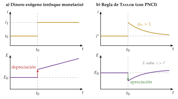
iii) Implicaciones
Hacer endógena la política monetaria resuelve la paradoja: la moneda no se aprecia a pesar de la inflación, sino por la respuesta que el mercado espera del banco central.
El signo depende de la credibilidad: donde el banco central no tiene un objetivo creíble, una inflación inesperada se lee como más inflación futura, y la moneda se deprecia.
Los fundamentos que importan para el tipo de cambio son los de la regla (la inflación y la brecha de producción relativas), no la cantidad de dinero.
c) Evidencia empírica
Los modelos con los fundamentos de la regla de Taylor predicen fuera de la muestra mejor que el paseo aleatorio a 1 mes en muchas monedas frente al dólar, y el tipo real del marco frente al dólar que implican las reglas de los 2 bancos centrales se mueve con el observado.
Pero el resultado no se mantiene en todos los periodos ni en todos los países.
d) Valoración
Es de los pocos enfoques que mejoran algo la predicción a corto plazo, y su lógica es la de la política monetaria actual.
Pero sigue apoyándose en la PNCI, y la PNCI es justo lo que falla en los datos a corto plazo, que es la paradoja siguiente.
III.1.2. La paradoja del margen forward
a) Idea
La segunda línea contrasta la pieza que comparten todos los modelos de activos: la PNCI con expectativas racionales. Si fallara, el tipo a plazo no predeciría el contado futuro.
b) Modelo
i) Supuestos
Se cumplen la PCI y la PNCI, y las expectativas son racionales.
ii) Desarrollo
Con esos supuestos, el margen a plazo es la depreciación esperada, y esta es una predicción insesgada de la que ocurre. En la regresión de Fama (1984),23 en logaritmos, \[\tag{23} \Delta e_{t+1}=\beta_0+\beta_1\,(f_t-e_t)+\varepsilon_{t+1},\] tendría que salir \(\beta_0=0\) y \(\beta_1=1\) [ver tema 3.B.13].
iii) Implicaciones
Si la pendiente fuera 1, la moneda con el tipo de interés más alto se depreciaría en el diferencial de intereses y no habría beneficio esperado en invertir en ella.
c) Evidencia empírica
La pendiente sale casi siempre negativa en las grandes monedas: la media de unas 75 estimaciones publicadas es \(-0{,}88\), y ninguna llega a 1.
La moneda con el tipo de interés más alto, que según la PNCI debería depreciarse, tiende a depreciarse menos de lo que dice el margen a plazo o incluso a apreciarse. Por eso gana dinero, en media, la operación de diferencial de tipos (carry trade): endeudarse en la moneda de tipo bajo e invertir en la de tipo alto.
Más que una apreciación sistemática, es un sesgo del tipo a plazo como predictor: con una constante \(\beta_0\) positiva y grande, la regresión puede predecir una depreciación, aunque menor que el margen.
d) Valoración
Para las teorías del tipo de cambio es un problema serio: la PNCI es la pieza que convierte las expectativas en tipo de cambio de hoy en el enfoque monetario y en Dornbusch (bloque II).
Las salidas son 3:
una prima de riesgo que varía en el tiempo, que acerca los modelos al de cartera (II.2) y que retoman los intermediarios financieros (III.2.3);
sucesos raros que el mercado teme y la muestra no recoge, como una fuerte devaluación: el problema del peso (peso problem);
expectativas no racionales y heterogéneas: con fundamentalistas y chartistas que se turnan, el tipo de cambio puede alejarse de sus fundamentos durante años y volver de golpe, en la línea de la economía conductual [ver tema 3.A.1] [ver tema 3.A.10].
La última da una explicación de la desconexión. Las demás teorías de las expectativas (las noticias, las burbujas racionales y los chivos expiatorios) están en el anexo E.
III.1.3. El tipo de cambio real de equilibrio: FEER, BEER y EBA
a) Idea
La tercera línea cierra lo que abrió la PPA (I.2): ¿está sobrevalorada una moneda? La PPA da una referencia ingenua, como el índice Big Mac, pero Balassa-Samuelson muestra que el tipo real de equilibrio se mueve con la productividad (I.2.2).
Los organismos internacionales y los analistas estiman un tipo de cambio real de equilibrio, el que corresponde a los fundamentos, y llaman desalineamiento a la diferencia con el observado.
b) Modelo
i) Supuestos
Una economía pequeña y abierta, a largo plazo (pleno empleo), con el tipo de interés mundial dado, \(r^*\).
ii) Desarrollo
El ahorro que no se invierte dentro sale fuera, y el tipo real se ajusta para que las exportaciones netas lo igualen: \[\tag{24} S-I(r^*)=XN(q) .\]
iii) Implicaciones
Una política fiscal expansiva reduce el ahorro y aprecia el tipo real.
Un arancel aumenta la demanda de exportaciones netas y aprecia el tipo real, sin cambiar las exportaciones netas, que fija el ahorro.
c) Extensiones
Los métodos empíricos (tabla 5): el tipo de equilibrio fundamental, el de equilibrio conductual y el método del FMI.
| Método | Qué tipo real busca | Cómo se estima |
|---|---|---|
| PPA (índice Big Mac) | el que iguala los precios de una cesta | comparación de precios; ingenuo: no recoge la productividad |
| FEER (Williamson, 1983) |
el de equilibrio fundamental: pleno empleo y una cuenta corriente sostenible | se fija la cuenta corriente «sostenible» y se busca el tipo real que la da |
| BEER (Clark y MacDonald, 1999) |
el de equilibrio conductual: el que predicen los fundamentos | regresión del tipo real sobre la productividad relativa, la relación real de intercambio y los activos exteriores netos |
| EBA (FMI, 2013) | el que da la cuenta corriente que corresponde a los fundamentos y a unas políticas deseables | regresión de la cuenta corriente de muchos países; la brecha se traduce en una brecha del tipo real |
Fuente: elaboración propia a partir de Williamson (1983), Clark y MacDonald (1999) y Phillips et al. (2013).
d) Evidencia empírica
El FMI publica cada año su evaluación en el External Sector Report. En el último, con datos de 2025, juzga la posición exterior de la zona del euro en línea con sus fundamentos; la de Estados Unidos, más débil, y las de China, Alemania y España, más fuertes, y la de Japón, algo más fuerte [ver tema 3.B.11] [ver tema 3.B.22] [ver tema 4.A.21].
Una posición más fuerte de lo que justifican los fundamentos corresponde a un tipo real infravalorado, y una más débil, a uno sobrevalorado.
e) Valoración
Son la herramienta práctica de hoy, pero incorporan juicios sobre cuáles son los niveles «deseables» de la cuenta corriente o de las políticas, y sus estimaciones cambian mucho de un método a otro.
Sirven para orientar la supervisión y el debate de política, no para predecir el tipo de cambio.
III.2. Fundamentación microeconómica sólida
Una vez vistas las nuevas líneas, que cambian un supuesto de los modelos de activos, pasamos a los modelos que derivan el tipo de cambio de las decisiones de los agentes. Atacan el problema por 3 lados:
la nueva macroeconomía abierta, por la forma en que las empresas fijan los precios;
la microestructura, por la forma en que se negocia en el mercado de divisas;
los mercados financieros imperfectos, por la capacidad limitada de los intermediarios para asumir riesgo.
III.2.1. La nueva macroeconomía abierta: Corsetti y Pesenti
a) Idea
La nueva macroeconomía de la economía abierta (NOEM, por sus siglas en inglés) nace con el modelo Redux de Obstfeld y Rogoff (1995): modelos de equilibrio general dinámicos con agentes que optimizan, competencia monopolística y rigideces nominales, en 2 países [ver tema 3.A.7] [ver tema 3.B.19].
Son modelos de ciclo real ampliados con rasgos neokeynesianos y llevados a la economía abierta. Su base es el modelo neokeynesiano de economía cerrada, con la política monetaria como regla de tipos de interés, cuyos fundamentos microeconómicos sistematizó Woodford (2003).24
Se han convertido en el modelo de trabajo de muchos bancos centrales y organismos internacionales, como el SIGMA de la Reserva Federal o el GEM del FMI.
Corsetti y Pesenti (2009) reducen un modelo de este tipo a unas pocas curvas, para que se pueda enseñar como el IS-LM. Para el tipo de cambio, su aportación es mostrar que lo que hace depende de la moneda en que las empresas fijan los precios.
b) Modelo
i) Supuestos
2 países con hogares que optimizan, competencia monopolística y precios rígidos.
En la versión simple, el tipo de cambio es el cociente de las políticas monetarias de los 2 países, \(E=\mu/\mu^*\), con \(\mu\) el tono de la política monetaria (el gasto nominal que sostiene; aquí \(\mu\) no es el margen).
ii) Desarrollo
Precios en la moneda del productor (producer currency pricing, PCP): el exportador extranjero fija su precio en su moneda, y el importador nacional paga \(EP^*\).
La depreciación que causa una expansión monetaria pasa entera a los precios de importación, y la depreciación nominal es real.
Aunque haya rigideces nominales internas, vuelve el resultado del modelo monetario con precios flexibles: el tipo de cambio salta de una vez a su valor de largo plazo y no hay sobrerreacción.
Precios en la moneda del comprador (local currency pricing, LCP): el exportador extranjero fija su precio en la moneda nacional.
El tipo de cambio apenas mueve los precios de importación, que es una rigidez nominal más.
Para absorber la misma expansión monetaria, el tipo de cambio tiene que moverse más: vuelve la sobrerreacción de Dornbusch.
iii) Implicaciones
Lo que hace el tipo de cambio ante la política monetaria, y cuánto traspasa a los precios, depende de la moneda en que se facturan las exportaciones: la sobrerreacción no es un resultado general.
c) Valoración
Aportan rigor microeconómico y permiten analizar el bienestar y la política óptima, y explican el traspaso incompleto del tipo de cambio a los precios.
Pero sus resultados dependen de supuestos difíciles de contrastar (en qué moneda se fijan los precios, qué activos se negocian), y en su forma reducida predicen el tipo de cambio tan mal como los modelos clásicos.
Hoy gran parte del comercio se factura en dólares, ni en la moneda del exportador ni en la del comprador, y el tipo de cambio frente al dólar pesa más que el bilateral en los precios y en el comercio [ver tema 3.A.32] [ver tema 3.A.37].
III.2.2. El flujo de órdenes: Evans y Lyons (2002)
a) Idea
Las variables macroeconómicas de los modelos cambian despacio y no pueden explicar los movimientos del tipo de cambio a horizontes inferiores a 2 años. Hay que mirar cómo se negocia en el mercado de divisas: qué información tienen los agentes y cómo llega a los precios.
Es el enfoque de la microestructura del mercado de divisas.
b) Modelo
i) Supuestos
Con la información pública apenas hay margen para predecir el tipo de cambio. Pero parte de la información sobre los fundamentos está dispersa y es privada: está en las operaciones de los clientes.
El mercado tiene 2 tipos de agentes: los creadores de mercado, que cotizan precios de compra (bid) y de venta (ask), y sus clientes, que operan con ellos [ver tema 3.B.13].
ii) Desarrollo
Las órdenes de los clientes son información privada para cada creador de mercado: le dicen cómo interpretan los clientes las noticias.
Esa información pasa al resto del mercado cuando los creadores de mercado operan entre sí para ajustar sus posiciones, en el mercado interbancario.
El flujo de órdenes, \(\mathrm{FO}_t\) (compras menos ventas de una divisa iniciadas por quien acepta la cotización), mide la demanda neta de esa divisa. Evans y Lyons (2002) lo añaden a un modelo con el diferencial de tipos de interés: \[\tag{25} \Delta e_t=\beta_0+\beta_1\,\Delta(i_t-i^{*}_t)+\beta_2\,\mathrm{FO}_t+\varepsilon_t .\]
iii) Implicaciones
El flujo de órdenes es el determinante inmediato del tipo de cambio: agrega la información dispersa sobre los fundamentos que tienen los clientes.
La desconexión a corto plazo no es ausencia de causas: las causas se ven en el mercado, en las órdenes, y no en las estadísticas macroeconómicas, que se publican tarde y con poca frecuencia.
c) Evidencia empírica
Con datos diarios, el diferencial de tipos de interés explica casi nada, y el flujo de órdenes, más del 60 % de las variaciones del marco frente al dólar y más del 40 % de las del yen.
Fuera de la muestra, a horizontes de 1 día a 1 mes, el modelo predice mejor que los modelos macroeconómicos y que el paseo aleatorio.
d) Valoración
Es el primer enfoque que explica bien una parte grande de los movimientos a corto plazo.
Pero los datos de flujo de órdenes son privados y de cada banco, y queda abierta la pregunta de fondo: qué mueve el flujo de órdenes.
III.2.3. Mercados financieros imperfectos y desconexión
a) Idea
La prima de riesgo del modelo de cartera (II.2) vuelve con fundamentos microeconómicos: si los intermediarios que tienen que absorber los flujos de divisas no pueden asumir todo el riesgo, los flujos mueven el tipo de cambio.
b) Modelo
i) Supuestos
Gabaix y Maggiori (2015): los flujos de comercio y de cartera dejan desequilibrios entre la oferta y la demanda de divisas que tienen que absorber unos intermediarios con balance limitado.
Itskhoki y Mukhin (2021): un modelo de equilibrio general estándar con una perturbación financiera en la PNCI, una prima de riesgo \(\rho_t\) que se mueve por la demanda de inversores con expectativas sesgadas y por el arbitraje limitado.
ii) Desarrollo
Para que los intermediarios absorban los desequilibrios, el tipo de cambio tiene que moverse hasta que les compense el riesgo: una salida de capital deprecia la moneda, y la deprecia más cuanto menor es la capacidad de los intermediarios.
En forma reducida, la PNCI lleva la prima de riesgo: \[\tag{26} i_t-i^{*}_t=\mathbb{E}_t[e_{t+1}]-e_t+\rho_t .\]
iii) Implicaciones
Da fundamento al canal de cartera: la intervención en el mercado de divisas funciona porque cambia los flujos que los intermediarios tienen que absorber [ver tema 3.B.15].
Basta esa perturbación para reproducir a la vez la desconexión, la volatilidad del tipo de cambio, que el tipo real se mueva como el nominal y la paradoja del margen forward.
c) Evidencia empírica
Desde la crisis financiera de 2008, las compras de bonos extranjeros de los inversores de Estados Unidos y los indicadores de riesgo global explican una parte importante de los movimientos del dólar, cuando antes apenas lo hacían: es la reconexión del tipo de cambio con las variables financieras.
d) Valoración
Cierra el hilo del tema: lo que Meese y Rogoff abrieron se explica hoy, en buena parte, con la prima de riesgo que Branson ya tenía, ahora derivada de la conducta de los intermediarios.
Pero las perturbaciones financieras que mueven la prima son tan difíciles de observar y de predecir como el propio tipo de cambio: el modelo explica por qué no se puede predecir, no lo predice.
Cada respuesta a la desconexión mira a un sitio distinto: la regla de Taylor, al banco central; la paradoja del margen forward, a las expectativas; Corsetti y Pesenti, a la moneda en que se fijan los precios; Evans y Lyons, a las órdenes de los clientes; Gabaix, Maggiori, Itskhoki y Mukhin, al balance de los intermediarios. Todas explican por qué el tipo de cambio es imprevisible a corto plazo; ninguna permite predecirlo.
Recapitulación del bloque III: la regla de Taylor explica la paradoja de la apreciación; la paradoja del margen forward pone en duda la PNCI y abre la puerta a las primas de riesgo y a las expectativas heterogéneas; el tipo real de equilibrio es la herramienta práctica; y los modelos con fundamentación microeconómica explican la sobrerreacción, el corto plazo y la desconexión.
Nexo: con esto podemos responder a las preguntas del principio.
Conclusión
Recapitulación:
En conclusión, las teorías del tipo de cambio son complementarias: no son incorrectas, sino incompletas, y cada una sirve para un horizonte.
A largo plazo, el tipo de cambio es más predecible y sigue a sus fundamentos: se deprecia con más dinero relativo y con más inflación relativa (la PPA relativa) y se aprecia con más renta y, en el tipo real, con más productividad en los comerciables (Balassa-Samuelson). Un tipo de interés más alto deprecia si refleja más inflación esperada y aprecia si refleja una política monetaria más restrictiva.
A corto plazo es casi impredecible: dominan las expectativas, las noticias, la prima de riesgo y el flujo de órdenes. Y su volatilidad puede ser coherente con los fundamentos (Dornbusch): un movimiento brusco no prueba que haya especulación desestabilizadora.
La evidencia lo confirma: hay éxitos parciales, pero ningún modelo supera de forma sistemática al paseo aleatorio en todos los países, periodos y horizontes.
Francis Ysidro Edgeworth comparaba el movimiento a lo largo de las curvas de oferta de Marshall con el de las agujas de un reloj, que responde a muchos movimientos imperceptibles de la maquinaria. Lo mismo puede decirse del tipo de cambio.
Relevancia:
Para la política económica, estas teorías dicen qué cabe esperar del tipo de cambio: que transmite la política monetaria [ver tema 3.A.37], que la intervención esterilizada solo funciona si los activos no son sustitutos perfectos [ver tema 3.B.15] y que una apreciación real no siempre es una pérdida de competitividad.
Para la zona del euro, explican por qué el euro puede alejarse durante años de su valor de PPA y por qué los países que convergen tienen más inflación sin perder competitividad en los comerciables.
Extensiones:
El mercado en el que se forma el tipo de cambio y la paradoja del margen forward [ver tema 3.B.13].
La elección del régimen cambiario y la intervención [ver tema 3.B.15], las uniones monetarias [ver tema 3.B.16] y las crisis cambiarias [ver tema 3.B.17].
La coordinación internacional de las políticas y la nueva macroeconomía abierta [ver tema 3.B.19], y la supervisión de los desequilibrios exteriores [ver tema 3.B.22].
Opinión:
Que los modelos no predigan el tipo de cambio de mañana no los hace inútiles: explican hacia dónde tiende y por qué se mueve como se mueve, que es lo que necesita quien decide la política económica.
Lo que no conviene es pedirles lo que el propio modelo dice que no pueden dar: a horizontes de años orientan la PPA y el enfoque monetario; a horizontes de días mandan el flujo de órdenes y la prima de riesgo.
Idea final:
Volviendo al refrán, con el tipo de cambio el economista propone y el mercado dispone. ¿Qué determina el precio de una moneda? A la larga, sus fundamentos: el euro volvió una y otra vez hacia su valor de PPA, y la productividad explica por qué ese valor cambia.
A corto plazo, el mercado dispone, y lo que hoy sabemos es por qué nadie ha conseguido predecir el camino.
A. Anexo: la evidencia empírica sobre la PPA
Los contrastes de la PPA se han hecho más sofisticados a la par que las técnicas econométricas.
Las regresiones de los años 70: regresando el tipo de cambio sobre los precios relativos, los primeros estudios no encontraban apoyo a la PPA, salvo con inflaciones muy altas, como en la hiperinflación alemana de los años 20.
La conclusión fue que la PPA solo se cumple cuando dominan las perturbaciones monetarias sobre las reales.
Raíz unitaria, en los años 80: con las nuevas técnicas, muchos estudios contrastaron si el tipo de cambio real es estacionario, es decir, si vuelve a un valor de equilibrio, que es lo que implica la PPA a largo plazo.
Con los datos de la flotación posterior a Bretton Woods, en general no se podía rechazar que el tipo real fuera un paseo aleatorio: las desviaciones de la PPA serían permanentes.
Cointegración, desde finales de los 80: se contrasta si el tipo de cambio nominal y los precios relativos, \(e\), \(p\) y \(p^*\), comparten una tendencia común y mantienen una relación estable a largo plazo.
Los resultados fueron mixtos. El problema de fondo es que el periodo de flotación era demasiado corto para distinguir una vuelta lenta a la PPA de ninguna vuelta.
Series largas y paneles: con series de 2 siglos o con paneles de muchos países a la vez, para tener más datos, se encuentra que el tipo real revierte a la media, con vidas medias de 3 a 5 años.
La persistencia, sin explicar: aunque la PPA relativa se cumpla a largo plazo, falta explicar por qué las desviaciones duran tanto. Las perturbaciones reales no pueden explicar la volatilidad a corto plazo (la tecnología y las preferencias no cambian tanto), y las monetarias solo duran lo que tardan en ajustarse precios y salarios. Hay 3 explicaciones:
la no linealidad: con costes de transporte y costes hundidos de entrar en el mercado, el tipo real se mueve sin volver mientras no supera los umbrales que hacen rentable el arbitraje; si los supera, empieza el arbitraje, más intenso cuanto mayor es la desviación. Los modelos no lineales se ajustan bien a los tipos de cambio desde 1973 y dan velocidades de ajuste mayores que los lineales: con perturbaciones del 1 al 5 %, vidas medias inferiores a 3 años, y con las mayores, mucho menores;
el sesgo de agregación: los precios de los distintos bienes vuelven a velocidades distintas, y mezclarlos en un índice exagera la persistencia;
un equilibrio que se mueve: si el tipo real de equilibrio cambia con la productividad (I.2.2), medir la vuelta a una media fija la hace parecer más lenta de lo que es.
En resumen: la PPA relativa se cumple a muy largo plazo, el ajuste es muy lento y, a corto plazo, las desviaciones son grandes y volátiles.
Una advertencia: en Estados Unidos, casi toda la variación del tipo real, a cualquier horizonte, viene de los precios relativos de los bienes comerciables, no de los no comerciables. A corto plazo, la ley del precio único falla incluso en los bienes que se comercian, lo que limita lo que Balassa-Samuelson puede explicar.
B. Anexo: el modelo de Dornbusch completo
Ecuaciones: las de (12)-(15), en logaritmos (salvo los tipos de interés), con los precios extranjeros normalizados a 1 (\(p^*=0\)) y la renta en su nivel de pleno empleo, \(\bar y\): \[\begin{aligned} m-p&=k\,\bar y-h\,i,\\ i&=i^{*}+\dot e^{\,e},\qquad \dot e^{\,e}=\theta\,(\bar e-e),\\ \dot p&=\psi\,\big[\bar a+\nu\,(e-p)-b\,i-\bar y\big] . \end{aligned}\] Los precios suben si la demanda de bienes supera a la producción, a una velocidad \(\psi>0\); la demanda crece con el tipo real (\(\nu>0\)) y baja con el tipo de interés (\(b>0\)).
Estado estacionario (\(\dot p=0\), \(\dot e=0\), \(i=i^*\)): \(\bar p=m-k\,\bar y+h\,i^*\) y \(\bar e=\bar p+(\bar y+b\,i^*-\bar a)/\nu\). Por tanto, \(d\bar p/dm=d\bar e/dm=1\): el dinero es neutral, y los estados estacionarios posibles están sobre una recta de pendiente 1, la de la PPA a largo plazo.
Curva de los activos: restando el equilibrio monetario de largo plazo del de corto, \(i-i^*=(p-\bar p)/h\), y con la PNCI y las expectativas, \(\theta(\bar e-e)=(p-\bar p)/h\): \[e=\bar e-\frac{1}{h\,\theta}\,(p-\bar p),\] decreciente en el plano \((p,e)\).
Curva \(\dot e=0\): con previsión perfecta, la depreciación es el diferencial de intereses, \(\dot e=i-i^*=(p-\bar p)/h\), que es nulo en \(p=\bar p\): una vertical. A su derecha, la moneda se deprecia; a su izquierda, se aprecia.
Curva \(\dot p=0\): restando el estado estacionario y con \(i-i^*=(p-\bar p)/h\), \[\dot p=\psi\Big[\nu\,(e-\bar e)-\Big(\nu+\frac{b}{h}\Big)(p-\bar p)\Big],\] y \(\dot p=0\) es la recta \(e-\bar e=\big(1+\tfrac{b}{\nu h}\big)(p-\bar p)\), más inclinada que la de 45°. Por encima de ella, los precios suben; por debajo, bajan.
Expectativas racionales: a lo largo de la curva de los activos, \(\dot p=-\psi\big(\tfrac{\nu}{h\theta}+\nu+\tfrac{b}{h}\big)(p-\bar p)\) y la depreciación que ocurre es \(\dot e=-\dot p/(h\theta)\). Para que coincida con la esperada, \((p-\bar p)/h\), tiene que cumplirse \(\psi\big(\tfrac{\nu}{h\theta}+\nu+\tfrac{b}{h}\big)=\theta\), es decir, \(\theta^2-\psi\big(\nu+\tfrac{b}{h}\big)\theta-\tfrac{\psi\nu}{h}=0\), cuya raíz positiva es \[\tag{27} \theta=\frac{\psi}{2}\Big(\nu+\frac{b}{h}\Big)+\sqrt{\frac{\psi^2}{4}\Big(\nu+\frac{b}{h}\Big)^2+\frac{\psi\,\nu}{h}} .\]
Con este \(\theta\), la curva de los activos es la senda de silla: la única que lleva al estado estacionario. Las demás trayectorias se alejan de él.
Cuanto más rápido se ajustan los precios (mayor \(\psi\)), mayor es \(\theta\) y menor la sobrerreacción, \(1/(h\theta)\) en (17); con precios flexibles (\(\psi\to\infty\)), no la hay.
Sin el efecto del tipo de interés en la demanda (\(b=0\)), \(\theta=\psi\nu/2+\sqrt{\psi^2\nu^2/4+\psi\nu/h}\).
Una expansión monetaria permanente y no anticipada (gráfico 9):
el estado estacionario pasa de \(A\) a \(C\) por la recta de la PPA, y la senda de silla se desplaza de \(SS_0\) a \(SS_1\);
en el impacto, \(p\) no se mueve, y el tipo de cambio salta hasta la nueva senda de silla, al punto \(B\), por encima de \(\bar e_1\): es la sobrerreacción;
después, la economía baja por la senda de \(B\) a \(C\): los precios suben y la moneda se aprecia hasta \(\bar e_1\). ∎
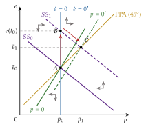
Fuente: elaboración propia a partir de Dornbusch (1976b) y Obstfeld y Rogoff (1996, cap. 9).
Una expansión anunciada: en el anuncio, \(p\) tampoco se mueve, y el tipo de cambio salta, menos que si no se anticipa, a una trayectoria que, siguiendo la dinámica con el dinero inicial, llega a la nueva senda de silla justo cuando la expansión se aplica. Hasta entonces la moneda se sigue depreciando, y después se aprecia hacia su nuevo nivel de largo plazo.
Producción variable: si la renta responde a corto plazo a la demanda, la expansión monetaria sube también la renta y, con ella, la demanda de dinero, y el tipo de interés cae menos. Como \(e-\bar e=(i-i^*)/\theta\), la moneda sobrerreacciona solo si el tipo de interés baja, es decir, si el aumento de la demanda de dinero que causa la mayor renta es menor que el de la oferta; si es mayor, el tipo de interés sube y la moneda se deprecia menos que a largo plazo.
C. Anexo: las pendientes del modelo de cartera
Con \(W=M+B+E\,B^*\) (19), una depreciación sube la riqueza en \(dW=B^*\,dE\). Diferenciando las 3 condiciones de equilibrio (20) con las ofertas de activos dadas, \(i^*\) fijo y expectativas estáticas: \[\begin{aligned} MM:&\quad 0=w'_{\mathrm M}\,W\,di+w_{\mathrm M}\,B^*\,dE &&\Longrightarrow\quad \left.\frac{dE}{di}\right|_{MM}=-\frac{w'_{\mathrm M}\,W}{w_{\mathrm M}\,B^*}>0,\\ BB:&\quad 0=w'_{\mathrm B}\,W\,di+w_{\mathrm B}\,B^*\,dE &&\Longrightarrow\quad \left.\frac{dE}{di}\right|_{BB}=-\frac{w'_{\mathrm B}\,W}{w_{\mathrm B}\,B^*}<0,\\ B^*B^*:&\quad B^*\,dE=w'_{\mathrm B^*}\,W\,di+w_{\mathrm B^*}\,B^*\,dE &&\Longrightarrow\quad \left.\frac{dE}{di}\right|_{B^*B^*}=\frac{w'_{\mathrm B^*}\,W}{(1-w_{\mathrm B^*})\,B^*}<0, \end{aligned}\] con \(w'_{\mathrm M}<0\), \(w'_{\mathrm B}>0\) y \(w'_{\mathrm B^*}<0\) las derivadas de las partes de la riqueza respecto a \(i\).
En el mercado de bonos extranjeros, una depreciación sube a la vez el valor de la oferta, \(B^*dE\), y el de la demanda, \(w_{\mathrm B^*}B^*dE\). Como \(w_{\mathrm B^*}<1\), sube más la oferta, y hace falta que \(i\) baje para que se demanden más bonos extranjeros: no hay ambigüedad.
\(BB\) es más inclinada que \(B^*B^*\) si \(w'_{\mathrm B}/w_{\mathrm B}>|w'_{\mathrm B^*}|/(1-w_{\mathrm B^*})\). Basta con que la demanda de bonos nacionales responda a \(i\) al menos tanto como la de extranjeros, \(w'_{\mathrm B}\geq|w'_{\mathrm B^*}|\), porque \(w_{\mathrm B}<1-w_{\mathrm B^*}\) (la diferencia es \(w_{\mathrm M}>0\)).
Como \(w_{\mathrm M}+w_{\mathrm B}+w_{\mathrm B^*}=1\) para todo \(i\), también \(w'_{\mathrm M}+w'_{\mathrm B}+w'_{\mathrm B^*}=0\): si 2 mercados se vacían, el tercero también (ley de Walras). ∎
D. Anexo: otros factores reales a largo plazo
Con los precios dados, todo lo que aumente la demanda de los bienes comerciables nacionales frente a los extranjeros tiende a apreciar la moneda (\(\downarrow E\)) a largo plazo: los bienes nacionales se siguen vendiendo bien aunque la moneda valga más. Lo que aumente la demanda de los extranjeros la deprecia. Hay 4 factores:
el nivel de precios relativo: si suben los precios de los bienes europeos, con los de Estados Unidos dados, cae su demanda y el euro tiende a depreciarse; si suben los de Estados Unidos, el euro tiende a apreciarse;
las barreras al comercio: si España sube el arancel al acero de Estados Unidos, aumenta la demanda de acero español y el euro tiende a apreciarse;
las preferencias: si en Estados Unidos aumenta el gusto por el vino español, aumentan las exportaciones y el euro tiende a apreciarse; si en España se demandan más bienes de Estados Unidos, tiende a depreciarse;
la productividad: cuando un país se hace más productivo que los demás, sobre todo en los comerciables, sus bienes se abaratan, aumenta su demanda y su moneda se aprecia.
La productividad y Balassa-Samuelson (I.2.2): los 2 dicen que más productividad aprecia la moneda, pero por caminos distintos y no se contradicen.
En este enfoque, con los precios dados, la productividad abarata los bienes nacionales y aumenta su demanda: es una apreciación del tipo nominal.
En Balassa-Samuelson, con la ley del precio único en los comerciables, la productividad sube los salarios y encarece los no comerciables: es una apreciación del tipo real, que con el tipo nominal fijo llega por una inflación más alta.
Los factores de la demanda de activos, que mueven el tipo de cambio a corto plazo (los tipos de interés, las expectativas, la prima de riesgo), son los de la paridad no cubierta y del modelo de cartera (I.3 y II.2) [ver tema 3.B.13].
E. Anexo: los modelos de expectativas
Estas teorías parten de 2 hechos: los modelos de activos no explican la volatilidad del tipo de cambio a corto plazo, y los economistas dan cada vez más importancia a las expectativas de los agentes.
a) Las noticias
Si el tipo de cambio es el precio de un activo, el valor presente de los fundamentos esperados (11), un cambio en los valores futuros esperados de un fundamento lo mueve hoy, aunque los fundamentos de hoy no cambien.
Con expectativas racionales, lo que ya se esperaba está en el tipo de cambio: solo lo mueve la información nueva, las noticias, que por definición son imprevisibles. Por eso reacciona con fuerza y en el acto ante una información no anticipada (por ejemplo, una subida inesperada de los tipos de interés).
El modelo explica que el tipo de cambio se parezca a un paseo aleatorio aunque dependa de los fundamentos, la misma idea que formalizan Engel y West (2005). La síntesis del enfoque está en Frenkel y Mussa (1985).
b) Las burbujas racionales
O. J. Blanchard y Watson (1982) muestran que una burbuja es compatible con las expectativas racionales. En el modelo monetario, \(e_t=\frac{1}{1+h}\,z_t+\frac{h}{1+h}\,\mathbb{E}_t[e_{t+1}]\), con \(z_t\) los fundamentos; además de la solución de los fundamentos, \(e^F_t\), también es solución \(e_t=e^F_t+b_t\) con \[\tag{28} \mathbb{E}_t[b_{t+1}]=\frac{1+h}{h}\,b_t ,\] un componente que no depende de los fundamentos y que se espera que crezca a la tasa \(1/h\).
La burbuja puede estallar: si sigue con probabilidad \(\pi_b\) y estalla con \(1-\pi_b\), mientras sigue tiene que crecer a la tasa \((1+h)/(h\,\pi_b)-1\), más deprisa, para compensar el riesgo de estallar. Quien la sostiene no es irracional: cobra el crecimiento esperado y asume el riesgo.
Las burbujas permiten que el tipo de cambio se aleje de sus fundamentos sin abandonar las expectativas racionales; pero no son fáciles de distinguir de un cambio en los fundamentos que el investigador no observa.
c) Las expectativas heterogéneas
En el mercado de divisas conviven chartistas, que extrapolan la tendencia reciente, y fundamentalistas, que esperan la vuelta al valor de equilibrio.
Si los fundamentalistas saben que hay chartistas, pueden dudar de que el tipo de cambio vuelva pronto al equilibrio y renunciar a apostar por esa vuelta. Así se explica que el tipo de cambio se aleje mucho y durante mucho tiempo de sus fundamentos.
De Grauwe y Grimaldi (2006) lo modelizan con agentes que eligen la regla de predicción que mejor les ha rendido, y con muchas reglas a la vez: hay equilibrios múltiples, burbujas que estallan y dinámicas complejas [ver tema 3.B.13].
d) El chivo expiatorio
Bacchetta y Wincoop (2004, 2013) explican por qué cambia tanto con el tiempo la relación entre el tipo de cambio y cada fundamento. No lo atribuyen a cambios frecuentes de los parámetros, sino a las expectativas sobre ellos.
Los agentes conocen bastante bien la relación de largo plazo entre los fundamentos y el tipo de cambio, pero no sus parámetros a corto y medio plazo.
Cuando el tipo de cambio se mueve por causas que no ven, lo atribuyen a algún fundamento visible, sobre todo a uno que esté lejos de su valor habitual, y le dan más peso: ese fundamento es el chivo expiatorio, al que se culpa de lo que han hecho otros.
Es racional hacerlo, y explica la inestabilidad de las relaciones estimadas sin que cambie la estructura de la economía.
Las encuestas a los operadores de divisas sobre el peso que dan a cada fundamento apoyan la teoría.
F. Anexo: preguntas de test
Preguntas oficiales del primer ejercicio sobre este tema y apartado donde se contestan (las respuestas, en el simulador):
PPA absoluta y relativa: julio de 2003 (n.º 33), junio de 2004 (n.º 29) y julio de 2022 (n.º 35) (I.2.1);
paridades de intereses y tipo a plazo: septiembre de 2005 (n.º 31), septiembre de 2006 (n.º 31, tipo fijo creíble), enero de 2016 (n.º 31), febrero de 2019 (n.º 31) y junio de 2024 (n.º 32, con prima de riesgo) (I.3);
paridad de intereses reales: julio de 2008 (n.º 29) (II.1.1);
enfoque de flujos y fondos prestables: noviembre de 2016 (n.º 32) (I.1 y III.1.3);
modelo monetario: julio de 2008 (n.º 32), enero de 2016 (n.º 32) y junio de 2023 (n.º 30) (II.1.1);
Dornbusch: septiembre de 2006 (n.º 30) y enero de 2020 (n.º 33), de qué depende la sobrerreacción; octubre de 2002 (n.º 32), expansión anticipada (II.1.2 y anexo B);
modelo de cartera: junio de 2023 (n.º 30) y marzo de 2025 (n.º 33) (II.2). Ojo: en la de 2023, el efecto de más bonos nacionales sobre el tipo de cambio es ambiguo, no una depreciación;
Balassa-Samuelson: octubre de 2009 (n.º 32) y junio de 2024 (n.º 33) (I.2.2);
paradoja del margen forward y teorías recientes: septiembre de 2006 (n.º 27), julio de 2022 (n.º 36) y marzo de 2026 (n.º 30) (III.1.2 y anexo E). Ojo: la de 2006 da por buena la redacción «la paridad cubierta de intereses señalaría…»; la teoría es la paridad no cubierta. En la de 2022, las burbujas de Blanchard y Watson son compatibles con las expectativas racionales.
Preguntas tipo test del primer ejercicio: simulador de test.
Bibliografía
La idea de que el tipo de cambio es uno de los precios más importantes de una economía, porque influye en todos los demás, es de Paul Volcker, 12.º presidente de la Junta de Gobernadores de la Reserva Federal de Estados Unidos, del 6 de agosto de 1979 al 11 de agosto de 1987.↩︎
La determinación del tipo de cambio interesa sobre todo con tipos flexibles, pero también con flexibilidad limitada o con tipos fijos: si el tipo fijado no es el de equilibrio, el mercado presiona sobre él y obliga a la autoridad monetaria a intervenir [ver tema 3.B.15].↩︎
Paul Samuelson recibió el Premio Nobel de Economía en 1970 «por el trabajo científico con el que ha desarrollado la teoría económica estática y dinámica y ha contribuido activamente a elevar el nivel de análisis de la ciencia económica».↩︎
Los movimientos de capital no son nuevos: fueron muy grandes con el patrón oro (1870-1914), se hundieron entre las guerras y con Bretton Woods y volvieron con la liberalización de los años 70 y 80. Las teorías del ajuste de la balanza de pagos nacieron con Bretton Woods, cuando eran pequeños y los tipos fijos, y por eso se plantean sobre todo con tipo fijo [ver tema 3.B.12].↩︎
Cassel (1922, 138-39): «Nuestra disposición a pagar un cierto precio por el dinero extranjero se debe, en última instancia y en esencia, a que ese dinero tiene un poder de compra sobre los bienes y servicios de ese país extranjero. Por otra parte, cuando ofrecemos tanto o cuanto de nuestro dinero, en realidad ofrecemos un poder de compra sobre los bienes y servicios de nuestro país. Nuestra valoración de una moneda extranjera en términos de la nuestra depende, por tanto, sobre todo del poder de compra relativo de las 2 monedas en sus respectivos países» (traducción propia).↩︎
La PPA relativa es menos restrictiva: admite que los precios en una moneda común difieran entre países, siempre que la diferencia no cambie. La absoluta implica la relativa (\(q=1\) es un caso de \(q\) constante), pero no al revés.↩︎
Una rama de la literatura, iniciada por Roll (1979), sostiene que no tiene por qué volver. Si los agentes tienen expectativas racionales y especulan con bienes, el rendimiento esperado de comprar un bien extranjero y guardarlo un periodo, \(\mathbb{E}_t[\Delta p^*_{t+1}]+\mathbb{E}_t[\Delta e_{t+1}]-\mathbb{E}_t[\Delta p_{t+1}]\) en moneda nacional, tiene que ser igual al de guardar uno nacional, es decir, nulo en términos relativos. Como ese rendimiento es \(\mathbb{E}_t[\Delta q_{t+1}]\) (con \(q\equiv e+p^*-p\) en logaritmos), el tipo real sería un paseo aleatorio, \(q_{t+1}=q_t+\eta_{t+1}\) con \(\mathbb{E}_t[\eta_{t+1}]=0\). Es la llamada PPA ex ante o de mercados eficientes: la mejor predicción del tipo real de mañana es el de hoy, las perturbaciones son permanentes y la PPA no se cumpliría ni a largo plazo. Otros autores no comparten esta conclusión.↩︎
Paul Krugman recibió el Premio Nobel de Economía en 2008 «por su análisis de los patrones del comercio y de la localización de la actividad económica».↩︎
La misma lógica de arbitraje fija el precio a plazo de otros activos [ver tema 3.B.13] [ver tema 3.B.25].↩︎
Robert Mundell recibió el Premio Nobel de Economía en 1999 «por su análisis de la política monetaria y fiscal con distintos regímenes cambiarios y su análisis de las áreas monetarias óptimas».↩︎
James Meade recibió el Premio Nobel de Economía en 1977, con Bertil Ohlin, «por su contribución pionera a la teoría del comercio internacional y de los movimientos internacionales de capital».↩︎
El nombre de «modelo de Mundell-Fleming» lo popularizó Rudiger Dornbusch: las primeras referencias publicadas son suyas, de 1976, y su manual lo generalizó.↩︎
Un precedente más simple parte de la ecuación de cambios, \(MV\equiv PY\), en los 2 países, y de la PPA absoluta. La ecuación es en sí una identidad contable, que se cumple siempre (su antecedente es Hume (1752)); Fisher (1911) la convierte en la teoría cuantitativa al suponer \(V\) estable, \(Y\) en el pleno empleo y que la causalidad va del dinero a los precios. Con esos supuestos, \(E=P/P^*=(MV/Y)/(M^*V^*/Y^*)\). Con la PPA relativa, en tasas, \(\gamma_E=(\gamma_M-\gamma_{M^*})+(\gamma_V-\gamma_{V^*})-(\gamma_Y-\gamma_{Y^*})\) [ver tema 3.A.35]. Es el modelo de abajo con elasticidad-renta 1 y sin tipo de interés.↩︎
El enfoque es, implícitamente, de equilibrio general. Una economía abierta tiene 6 mercados: bienes, trabajo, dinero nacional, dinero extranjero, bonos nacionales y bonos extranjeros. Los precios y salarios flexibles vacían los de bienes y trabajo; el tipo de cambio flexible permite tratar los 2 de dinero como uno, y la sustituibilidad perfecta, los 2 de bonos como uno. Si el mercado de dinero está en equilibrio, el de bonos también lo está, por la ley de Walras: basta con mirar el mercado de dinero.↩︎
El lado derecho de (10) mide el exceso de oferta de dinero relativo: todo lo que aumente la oferta de dinero relativa deprecia, y todo lo que aumente la demanda relativa aprecia.↩︎
Con el anuncio en \(t_0\) y la expansión en \(t_1\), la moneda se deprecia en \(t_0\) y sigue depreciándose entre \(t_0\) y \(t_1\); desde \(t_1\) se aprecia hacia su nuevo nivel de largo plazo, más alto que el inicial.
↩︎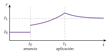
James Tobin recibió el Premio Nobel de Economía en 1981 «por su análisis de los mercados financieros y de sus relaciones con las decisiones de gasto, el empleo, la producción y los precios».↩︎
Comparar con un paseo aleatorio no supone que el tipo de cambio lo siga: es tomar como referencia el modelo de predicción más simple, el de un agente que no tiene idea de lo que va a pasar y da la misma probabilidad a una apreciación que a una depreciación.↩︎
Por ejemplo, con datos de 1970 a 2020, se estiman las ecuaciones con los de 1970 a 1995 y se predice de 1996 a 2020 con los valores observados de las variables exógenas en esos años. La muestra de Meese y Rogoff iba de marzo de 1973 a junio de 1981.↩︎
Otra lectura posible de un comportamiento que parece aleatorio es el caos determinista: un sistema dinámico determinista con dependencia sensible de las condiciones iniciales genera series que pasan por aleatorias. La economía empezó a contrastarlo en los años 80, más de 20 años después. En los tipos de cambio, las no linealidades que se encuentran las explica sobre todo una volatilidad que cambia en el tiempo y se agrupa, no el caos: que el residuo de un modelo no sea ruido blanco no prueba que haya caos.↩︎
Se suele hablar indistintamente de análisis técnico y de análisis chartista, pero no son lo mismo: el chartista se basa solo en el estudio de los gráficos, y el técnico añade herramientas matemáticas o estadísticas, como las medias móviles o los indicadores de la fuerza de una tendencia [ver tema 3.B.23].↩︎
La prensa financiera lo contaba así: «La inflación empuja al alza el dólar canadiense», titulaba el Financial Times en mayo de 2007.↩︎
Eugene Fama recibió el Premio Nobel de Economía en 2013, con Lars Peter Hansen y Robert Shiller, «por su análisis empírico de los precios de los activos».↩︎
Michael Woodford recibió el Premio Nobel de Economía en 2026, con Robert Hall, «por los fundamentos microeconómicos de la estabilización macroeconómica».↩︎